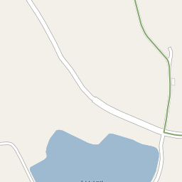
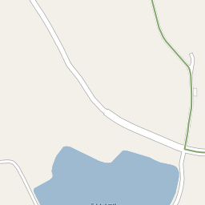

군산의 맛집 현황
통계
| 순번 | 업소명 | 업종 | 도로명주소 | 행정동 | 전화번호 | 군산사랑상품권 |
|---|
| 10 | 꽃보다소 | 한식 | 전북 군산시 칠성로 172 | 소룡동 | 0634618592 | O |
| 24 | 육대장군산시청점 | 한식 | 전북 군산시 조촌로 38 | 조촌동 | 0634529973 | O |
| 26 | 딸부자네통닭 | 치킨 | 전북 군산시 서흥길 68-2 | 흥남동 | 0634469989 | O |
| 33 | 와플반트 | 간식 | 전북 군산시 진포1길 1 | 수송동 | 0634653225 | O |
| 35 | 화양양꼬치 | 중식 | 전북 군산시 동수송5길 18 | 수송동 | - | O |
| 36 | 어울림 | 술집 | 전북 군산시 옥산면 계산로 97 | 옥산면 | 0634688384 | O |
| 40 | 김현진과자점 | 간식 | 전북 군산시 월명로 338 | 월명동 | 0634432003 | O |
| 45 | 이순신장군갈비 | 한식 | 전북 군산시 현충로 96 | 나운동 | - | O |
| 46 | 착한백반 | 한식 | 전북 군산시 요죽길 37 | 소룡동 | 0634654652 | O |
| 58 | 멕시칸치킨 | 치킨 | 전북 군산시 경촌1길 56 | 경암동 | - | O |
| 70 | 바다뜰한식마을 | 한식 | 전북 군산시 가도로 14 | 소룡동 | 0634717022 | O |
| 79 | 153부대찌개 | 한식 | 전북 군산시 옥서면 신장원길 32 | 옥서면 | 0634630067 | O |
| 91 | 수배로스 | 한식 | 전북 군산시 신평2길 3 | 수송동 | 0634714636 | O |
| 101 | 멕시칸치킨 | 치킨 | 전북 군산시 양안로 122 | 조촌동 | - | O |
| 107 | 마코토회전초밥 | 일식 | 전북 군산시 백토로 198 | 나운동 | 0634688879 | O |
| 111 | 옛날팥죽 | 한식 | 전북 군산시 신설2길 4 | 나운동 | 0634428884 | O |
| 113 | 땡초먹고맴맴 | 한식 | 전북 군산시 백토로 92 | 신풍동 | 0634719333 | O |
| 115 | 장인족발 | 한식 | 전북 군산시 하나운로 37 | 나운동 | 0634637789 | O |
| 123 | 파스토 | 양식 | 전북 군산시 황룡안길 50 | 나운동 | 0634646202 | O |
| 129 | 산수촌 | 한식 | 전북 군산시 옥서면 옥구저수지로 156 | 옥서면 | - | O |
| 130 | 가빈이네 | 한식 | 전북 군산시 옥도면 선유북길 117 | 옥도면 | 0634661092 | O |
| 137 | 생뚝 | 한식 | 전북 군산시 구영7길 115 | 중앙동 | 0634424223 | O |
| 141 | 신우식당 | 한식 | 전북 군산시 하신2길 12-3 | 나운동 | 0634667642 | O |
| 143 | 크로바 | 술집 | 전북 군산시 하신2길 16-4 | 나운동 | - | O |
| 145 | 상고앞분식 | 분식 | 전북 군산시 팔마로 10 | 신풍동 | - | O |
| 154 | 송반장 | 중식 | 전북 군산시 칠성로 149 | 미성동 | - | O |
| 157 | 99씨엘 | 양식 | 전북 군산시 서수면 임피중길 8 | 중앙동 | 0634531950 | O |
| 159 | 총각네수산 | 식품판매 | 전북 군산시 칠성로 177 | 소룡동 | 0634656163 | O |
| 161 | 낭만가비 | 카페 | 전북 군산시 청소년회관로 49 | 신풍동 | 0634664006 | O |
| 186 | 두끼군산점 | 분식 | 전북 군산시 수송로 86 | 수송동 | - | O |
| 188 | 포차어게인 | 술집 | 전북 군산시 수송로 23 | 수송동 | - | O |
| 190 | 24시전주명가콩나물국밥군산수송점 | 한식 | 전북 군산시 수송로 241 | 수송동 | 0634632221 | O |
| 206 | 커피하우스 | 카페 | 전북 군산시 비응동로 55 | 소룡동 | - | O |
| 210 | 들녘 | 한식 | 전북 군산시 칠성5길 31 | 나운동 | - | O |
| 223 | 예가명태찜 | 한식 | 전북 군산시 계산로 87-8 | 수송동 | 0634617779 | O |
| 227 | 에이비씨커피 | 카페 | 전북 군산시 자유로 482 | 소룡동 | 0634678300 | O |
| 229 | 현대옥나운동삼성아파트점 | 한식 | 전북 군산시 수송로 56 | 수송동 | 0634628876 | O |
| 230 | 서수반점 | 중식 | 전북 군산시 서수면 항쟁로 210 | 서수면 | 0634510788 | O |
| 231 | 초가마루 | 한식 | 전북 군산시 소룡길 48 | 소룡동 | - | O |
| 233 | 호박터 | 한식 | 전북 군산시 옥산면 산성로 166 | 옥산면 | 0634662999 | O |
| 243 | 청해루 | 중식 | 전북 군산시 하신재길 8 | 나운동 | - | O |
| 250 | 강여사족발 | 한식 | 전북 군산시 신금길 18 | 중앙동 | - | O |
| 254 | 경일옻닭 | 한식 | 전북 군산시 동팔마길 41 | 흥남동 | - | O |
| 256 | 본뼈 | 한식 | 전북 군산시 수송1길 25 | 수송동 | 0634658231 | O |
| 260 | 민들레국수 | 한식 | 전북 군산시 황룡안길 39 | 나운동 | 0634712343 | O |
| 265 | 박경규웰빙항아리보쌈 | 한식 | 전북 군산시 공단대로 117 | 수송동 | 0634531988 | O |
| 274 | 모임실비포차 | 술집 | 전북 군산시 칠성안1길 18 | 미성동 | - | O |
| 279 | 군산순대국밥 | 한식 | 전북 군산시 미제길 31 | 나운동 | 0634660740 | O |
| 287 | 커피마을아몬드아저씨 | 카페 | 전북 군산시 진포1길 46 | 수송동 | 0634639969 | O |
| 299 | 도담한우 | 한식 | 전북 군산시 칠성로 161 | 소룡동 | 0634688068 | O |
| 302 | 탁류길서리 | 카페 | 전북 군산시 오룡재길 44 | 삼학동 | 0634664063 | O |
| 304 | 다옴 | 카페 | 전북 군산시 진포로 174 | 조촌동 | 0634514728 | O |
| 316 | 석호수산식당 | 한식 | 전북 군산시 비응남로 111 | 소룡동 | - | O |
| 319 | 시골막국수 | 한식 | 전북 군산시 중앙로 56 | 중앙동 | - | O |
| 323 | 골목집 | 한식 | 전북 군산시 계산로 87-6 | 수송동 | 0634670720 | O |
| 325 | 1974연탄시절 | 한식 | 전북 군산시 진포로 161 | 조촌동 | 0634427772 | O |
| 326 | 청기와아구 | 한식 | 전북 군산시 진포로 133 | 조촌동 | - | O |
| 329 | 쿤밍 | 중식 | 전북 군산시 수송로 163 | 수송동 | 0634628800 | O |
| 330 | 더정겨운 | 양식 | 전북 군산시 축동안길 5-28 | 서수면 | - | O |
| 349 | 개성집 | 한식 | 전북 군산시 동수송안길 39 | 수송동 | 0634679010 | O |
| 352 | 88콩나물국밥 | 한식 | 전북 군산시 나운안1길 23 | 나운동 | 0634641616 | O |
| 370 | 명동소바 | 한식 | 전북 군산시 평화길 122 | 중앙동 | 0634461366 | O |
| 372 | 러브발렌타인 | 양식 | 전북 군산시 동령길 6 | 월명동 | 0634452745 | O |
| 376 | 이삭분식 | 분식 | 전북 군산시 축동안길 55 | 서수면 | - | O |
| 377 | 포세이돈 | 한식 | 전북 군산시 수송남로 12 | 수송동 | 0634617171 | O |
| 378 | 한남생고깃간 | 한식 | 전북 군산시 계산2길 92 | 수송동 | - | O |
| 381 | 파이맘 | 카페 | 전북 군산시 미장남로 10 | 수송동 | 0634527603 | O |
| 407 | 일흥정육식당 | 한식 | 전북 군산시 서수면 용천로 357 | 서수면 | - | O |
| 413 | 아프리카커피가게 | 카페 | 전북 군산시 양안로 74 | 조촌동 | - | O |
| 414 | 논두렁쌈밥 | 한식 | 전북 군산시 구암로 124 | 구암동 | 0634453432 | O |
| 417 | 길포차 | 한식 | 전북 군산시 부골2길 47-6 | 조촌동 | 0634517658 | O |
| 420 | 바다회집현대코아점 | 한식 | 전북 군산시 문화안길 11 | 신풍동 | 0634661197 | O |
| 421 | 원빈니치커피하우스 | 식품판매 | 전북 군산시 서수송2길 20 | 수송동 | 0639116768 | O |
| 425 | 오랑게 | 한식 | 전북 군산시 축동안길 60 | 서수면 | 0634611006 | O |
| 426 | 대전집 | 한식 | 전북 군산시 거석길 41 | 월명동 | 0634461315 | O |
| 427 | 다사랑치킨피자호프나운점 | 술집 | 전북 군산시 수송로 19 | 수송동 | 0634659944 | O |
| 430 | 이화식당 | 한식 | 전북 군산시 진포로 155 | 조촌동 | 0634424469 | O |
| 434 | 삿갓다방 | 카페 | 전북 군산시 구영4길 33 | 중앙동 | - | O |
| 446 | 다사랑치킨피자호프수송점 | 술집 | 전북 군산시 동수송7길 16 | 수송동 | - | O |
| 452 | 세월촌 | 술집 | 전북 군산시 수송로 20 | 수송동 | 0634620606 | O |
| 453 | 보물섬자연산횟집 | 한식 | 전북 군산시 평화길 126-3 | 중앙동 | 0634451464 | O |
| 461 | 다사랑치킨피자대명점 | 술집 | 전북 군산시 대명길 8 | 흥남동 | - | O |
| 463 | 카페아르 | 카페 | 전북 군산시 동팔마길 50-1 | 흥남동 | - | O |
| 470 | 동보성 | 중식 | 전북 군산시 수송1길 19 | 수송동 | 0634667388 | O |
| 485 | 하모니카 | 카페 | 전북 군산시 송산1길 3-1 | 신풍동 | 0634683999 | O |
| 488 | 밥심도시락 | 도시락 | 전북 군산시 싸전길 19 | 중앙동 | - | O |
| 491 | 황금어장 | 한식 | 전북 군산시 상지곡1길 20 | 수송동 | 0634642266 | O |
| 497 | 더칸 | 술집 | 전북 군산시 수송북로 3 | 수송동 | 0634678200 | O |
| 498 | 송송 | 식품판매 | 전북 군산시 남수송4길 8-7 | 수송동 | - | O |
| 517 | 아빠통닭 | 치킨 | 전북 군산시 서당길 8 | 구암동 | - | O |
| 518 | 명궁칼국수 | 한식 | 전북 군산시 구영4길 16-5 | 중앙동 | 0634466403 | O |
| 519 | 군산촌닭 | 한식 | 전북 군산시 소룡2길 60 | 소룡동 | - | O |
| 524 | 청춘감성쌀핫도그 | 패스트푸드 | 전북 군산시 수송동로 100 | 수송동 | 0634714743 | O |
| 526 | 한실골 | 한식 | 전북 군산시 하나운3길 12 | 나운동 | 0634680185 | O |
| 531 | 산천장어 | 한식 | 전북 군산시 미성로 343 | 미성동 | 0634665600 | O |
| 532 | 오떡 | 분식 | 전북 군산시 축동로 128 | 서수면 | 0634655859 | O |
| 534 | 그린달빛 | 술집 | 전북 군산시 경촌1길 56 | 경암동 | - | O |
| 537 | 서소문소바 | 일식 | 전북 군산시 하신안길 62 | 나운동 | 0634710040 | O |
| 538 | 보배밥상 | 한식 | 전북 군산시 남수송4길 8-6 | 수송동 | 0634626692 | O |
| 539 | 커피브라운 | 카페 | 전북 군산시 남수송5길 8-17 | 수송동 | 0634657730 | O |
| 540 | 밥 | 한식 | 전북 군산시 축동로 7 | 서수면 | 0634615461 | O |
| 549 | 고향식당 | 한식 | 전북 군산시 서수면 항쟁로 213 | 서수면 | - | O |
| 560 | 봉달 | 한식 | 전북 군산시 나운로 54 | 나운동 | - | O |
| 563 | 애돈가 | 한식 | 전북 군산시 하나운1길 33 | 나운동 | 0639119255 | O |
| 564 | 미스사이공 | 아시아음식 | 전북 군산시 대학로 322 | 나운동 | 0634680420 | O |
| 567 | 청사초롱 | 한식 | 전북 군산시 수송안1길 7-2 | 수송동 | 0634718959 | O |
| 568 | 음악이야기 | 카페 | 전북 군산시 신지길 66 | 수송동 | 0634645110 | O |
| 583 | 동네방네 | 음식점 | 전북 군산시 풍문2길 34 | 흥남동 | 0634451028 | O |
| 588 | 남원성 | 중식 | 전북 군산시 신설2길 6-8 | 나운동 | - | O |
| 591 | 자금성 | 중식 | 전북 군산시 나포면 외곤1길 4 | 나포면 | 0634664545 | O |
| 593 | 장어골숯불구이 | 한식 | 전북 군산시 미장7길 11 | 수송동 | 0634520709 | O |
| 594 | 남도아구 | 한식 | 전북 군산시 칠성안1길 17 | 미성동 | - | O |
| 596 | 셰프의선물베이커리 | 간식 | 전북 군산시 서수송안2길 8 | 수송동 | 0634675524 | O |
| 600 | 창성양꼬치 | 중식 | 전북 군산시 진포로 223 | 경암동 | - | O |
| 601 | 오성황제해물짬뽕 | 중식 | 전북 군산시 신촌남길 11 | 나운동 | 0634645885 | O |
| 603 | 아빠애족발 | 한식 | 전북 군산시 미룡로 12 | 나운동 | 0634682343 | O |
| 605 | 피자마루조촌점 | 양식 | 전북 군산시 경기장로 141 | 조촌동 | 0634511082 | O |
| 607 | 군산해물찜 | 한식 | 전북 군산시 동수송9길 15 | 수송동 | 0634672425 | O |
| 625 | 장수식당 | 한식 | 전북 군산시 나운5길 46 | 나운동 | 0634670336 | O |
| 627 | 정이가 | 한식 | 전북 군산시 칠성안2길 104 | 소룡동 | 0634681379 | O |
| 632 | 돼지촌 | 한식 | 전북 군산시 옥산면 대위로 8 | 옥산면 | 0634687400 | O |
| 636 | 일신옥 | 한식 | 전북 군산시 구영7길 20 | 중앙동 | 0634611004 | O |
| 638 | 밀마당 | 분식 | 전북 군산시 상지곡안1길 18 | 수송동 | 0634632227 | O |
| 641 | 한끼맛있다 | 퓨전요리 | 전북 군산시 동수송안길 23 | 수송동 | 0634680218 | O |
| 643 | 대박부대찌개 | 한식 | 전북 군산시 현충로 71 | 나운동 | 0634634273 | O |
| 666 | 돌풍식당 | 한식 | 전북 군산시 해망로 158-1 | 해신동 | 0634464059 | O |
| 671 | 더한잔 | 술집 | 전북 군산시 동수송7길 14 | 수송동 | - | O |
| 673 | 수요일 | 술집 | 전북 군산시 상지곡1길 14-6 | 수송동 | 0634668253 | O |
| 677 | 군산부대찌개 | 한식 | 전북 군산시 옥서면 신장원길 19 | 옥서면 | - | O |
| 689 | 테트리스찜닭 | 한식 | 전북 군산시 하나운안1길 27 | 나운동 | 0639107373 | O |
| 694 | 신신불닭발 | 한식 | 전북 군산시 나운안1길 7 | 나운동 | 0634645801 | O |
| 696 | 대야장터국밥 | 한식 | 전북 군산시 대야면 만경로 1933 | 대야면 | 0634636586 | O |
| 700 | 커피베이군산여상점 | 카페 | 전북 군산시 상지곡안3길 17 | 수송동 | 0634645808 | O |
| 702 | 바베츄 | 술집 | 전북 군산시 수송안7길 38 | 수송동 | - | O |
| 704 | 르빵메종 | 간식 | 전북 군산시 조촌로 79 | 조촌동 | 0634513200 | O |
| 716 | 감탄 | 분식 | 전북 군산시 의료원로 159 | 나운동 | 0634663055 | O |
| 734 | 제일식당 | 한식 | 전북 군산시 축동안2길 37 | 서수면 | 0634669484 | O |
| 735 | 장안통아귀찜 | 한식 | 전북 군산시 현충로 62-7 | 나운동 | 0634659901 | O |
| 736 | 돈방석숯불갈비 | 한식 | 전북 군산시 월명2길 10 | 월명동 | - | O |
| 737 | 9292뒷고기 | 한식 | 전북 군산시 서수송1길 35 | 수송동 | 0634429295 | O |
| 740 | 김밥집이다 | 분식 | 전북 군산시 동수송안길 31 | 수송동 | 0634675656 | O |
| 741 | 형제갈치 | 한식 | 전북 군산시 수송안1길 17 | 수송동 | 0634645233 | O |
| 745 | 카페아몬드 | 카페 | 전북 군산시 법원로 86 | 조촌동 | - | O |
| 751 | 소담순대 | 한식 | 전북 군산시 축동로 98-3 | 서수면 | 0634679091 | O |
| 756 | 원조머슴집 | 한식 | 전북 군산시 옥산면 돌머리길 10-16 | 옥산면 | - | O |
| 761 | 도토리식당 | 한식 | 전북 군산시 설림안2길 23 | 소룡동 | 0634662201 | O |
| 766 | 일품명가 | 한식 | 전북 군산시 임피면 동군산로 746 | 임피면 | 0634524001 | O |
| 768 | 생생맛족 | 한식 | 전북 군산시 미원로 64-1 | 흥남동 | 0634676221 | O |
| 769 | 술푸마 | 술집 | 전북 군산시 하신1길 14 | 나운동 | - | O |
| 773 | 착한가맥 | 술집 | 전북 군산시 축동로 128 | 서수면 | - | O |
| 776 | 1박2일 | 한식 | 전북 군산시 하포로 29 | 수송동 | - | O |
| 786 | 명인 | 한식 | 전북 군산시 임피면 서원석곡로 602 | 임피면 | 0634522459 | O |
| 787 | 연어이야기 | 한식 | 전북 군산시 월명로 218 | 월명동 | 0634675587 | O |
| 789 | 찻집은 | 카페 | 전북 군산시 서수면 신상용전길 47 | 서수면 | - | O |
| 790 | 맛있는술집미술관 | 술집 | 전북 군산시 미장10길 12 | 수송동 | - | O |
| 793 | 육회총각 | 한식 | 전북 군산시 수송로 35 | 수송동 | - | O |
| 796 | 도가니탕전문점숙경 | 한식 | 전북 군산시 신풍2길 1 | 신풍동 | 0634651145 | O |
| 804 | 낙원볼태기 | 한식 | 전북 군산시 백토로 349-7 | 신풍동 | - | O |
| 815 | 소달구지곱창막창 | 한식 | 전북 군산시 칠성6길 144 | 미성동 | - | O |
| 818 | 옛날손짜장 | 중식 | 전북 군산시 구영7길 43 | 중앙동 | 0634455559 | O |
| 837 | 소주한잔 | 술집 | 전북 군산시 동아로 142 | 미성동 | - | O |
| 841 | 하버브릿지커피숍 | 카페 | 전북 군산시 옥구읍 옥구로 2 | 옥구읍 | - | O |
| 842 | 원풍갈비 | 한식 | 전북 군산시 진포로 206 | 경암동 | 0634433409 | O |
| 846 | 솥뚜껑일번지 | 한식 | 전북 군산시 부골2길 47-4 | 조촌동 | 0634511131 | O |
| 850 | 빵장수야곱 | 간식 | 전북 군산시 구암3.1로 9 | 구암동 | - | O |
| 872 | 은아반점 | 중식 | 전북 군산시 조촌로 115 | 조촌동 | 0634521221 | O |
| 873 | 호아네김밥만두 | 분식 | 전북 군산시 대야면 번영로 897 | 중앙동 | 0634517179 | O |
| 874 | 휴 | 카페 | 전북 군산시 백릉로 228 | 구암동 | 0634650600 | O |
| 877 | 소담 | 카페 | 전북 군산시 백릉로 102 | 조촌동 | - | O |
| 878 | 티바두마리치킨 | 치킨 | 전북 군산시 미성로 462 | 미성동 | - | O |
| 881 | 웰빙밥상 | 한식 | 전북 군산시 서수면 함안로 435-6 | 서수면 | 0634536652 | O |
| 882 | 한우한돈일번지 | 한식 | 전북 군산시 칠성로 175 | 소룡동 | - | O |
| 884 | 가연 | 한식 | 전북 군산시 양안로 51 | 조촌동 | - | O |
| 885 | 라온제나 | 양식 | 전북 군산시 오룡로 23 | 삼학동 | 0634681692 | O |
| 889 | 커피나무 | 카페 | 전북 군산시 백토로 198 | 나운동 | 0634662142 | O |
| 900 | 이진표베이커리 | 간식 | 전북 군산시 경암로 63 | 경암동 | 0634467817 | O |
| 903 | 군산한식뷔페 | 뷔페 | 전북 군산시 외항로 41 | 미성동 | - | O |
| 915 | 그랜드녹두팥칼국수 | 한식 | 전북 군산시 장미1길 30 | 월명동 | 0639117355 | O |
| 918 | 바다애향기 | 일식 | 전북 군산시 양안로 82 | 조촌동 | - | O |
| 921 | 튀김떡볶이순대&딜리버리 | 분식 | 전북 군산시 미장안6길 2 | 수송동 | 0634513636 | O |
| 926 | 전주감자탕 | 한식 | 전북 군산시 나운4길 17 | 나운동 | - | O |
| 927 | 찜하우스 | 한식 | 전북 군산시 수송안5길 1 | 수송동 | 0634667870 | O |
| 932 | 시골집칼국수 | 한식 | 전북 군산시 청소년회관로 56 | 신풍동 | - | O |
| 937 | 태성각 | 중식 | 전북 군산시 임피면 호원대3길 58 | 임피면 | 0634531243 | O |
| 941 | 동이트는집 | 한식 | 전북 군산시 대학로 416 | 나운동 | 0634629234 | O |
| 942 | 번지농장돌판아구찜 | 한식 | 전북 군산시 신지길 84 | 수송동 | 0634616565 | O |
| 944 | 시골통닭 | 치킨 | 전북 군산시 수송로 119 | 수송동 | 0634688292 | O |
| 949 | 스마일분식 | 분식 | 전북 군산시 월명로 479 | 월명동 | - | O |
| 950 | 서해명태식당 | 한식 | 전북 군산시 미원로 31 | 흥남동 | 0634424225 | O |
| 954 | 마왕족발 | 한식 | 전북 군산시 동수송8길 11 | 수송동 | - | O |
| 958 | 청년다방 | 분식 | 전북 군산시 하나운로 82 | 나운동 | - | O |
| 961 | 큰집닭강정 | 간식 | 전북 군산시 황룡2길 4-1 | 나운동 | 0634711019 | O |
| 966 | 공휴일 | 카페 | 전북 군산시 옥도면 신시도3길 28 | 옥도면 | - | O |
| 968 | 황금족발 | 한식 | 전북 군산시 진포안3길 8 | 수송동 | 0634680117 | O |
| 977 | 그리움한잔 | 술집 | 전북 군산시 삼학1길 38-1 | 삼학동 | - | O |
| 978 | 다온 | 한식 | 전북 군산시 동국사길 16 | 삼학동 | 0634688623 | O |
| 981 | 해오름회집 | 한식 | 전북 군산시 부곡1길 7 | 나포면 | 0634640880 | O |
| 986 | 다래횟집 | 일식 | 전북 군산시 대학로 394 | 나운동 | 0634647875 | O |
| 999 | 카페카사비앙카 | 카페 | 전북 군산시 신설로 16 | 나운동 | - | O |
| 1001 | 수라간 | 한식 | 전북 군산시 경암로 55 | 경암동 | 0634429426 | O |
| 1009 | 밥짓는부엌 | 한식 | 전북 군산시 조촌2길 30-4 | 조촌동 | 0634517509 | O |
| 1018 | 리가든 | 한식 | 전북 군산시 동수송안길 45 | 수송동 | - | O |
| 1020 | 와와치킨호프 | 술집 | 전북 군산시 신평안길 17 | 수송동 | 0634681303 | O |
| 1026 | 신촌돈가스 | 일식 | 전북 군산시 미제1길 18 | 나운동 | 0634715332 | O |
| 1029 | 바비후 | 치킨 | 전북 군산시 공항로 58 | 소룡동 | 0634613465 | O |
| 1030 | 더블미 | 카페 | 전북 군산시 동개정길 20 | 개정동 | 0630000000 | O |
| 1036 | 꽃순정 | 카페 | 전북 군산시 수송안10길 11 | 수송동 | - | O |
| 1040 | 와라횟집 | 한식 | 전북 군산시 비응남로 55 | 소룡동 | - | O |
| 1042 | 노루이자카야 | 술집 | 전북 군산시 칠성로 165 | 소룡동 | 0634639500 | O |
| 1053 | 신고궁한정식 | 한식 | 전북 군산시 조촌1길 10 | 조촌동 | 0634510111 | O |
| 1063 | 이소곰탕 | 한식 | 전북 군산시 해망로 550 | 해신동 | 0634682342 | O |
| 1064 | 미도리부대찌개 | 한식 | 전북 군산시 가도로 215 | 소룡동 | 0634656633 | O |
| 1065 | 완산골전주콩나물국밥&피순대 | 한식 | 전북 군산시 가도로 9 | 소룡동 | 0634667123 | O |
| 1066 | 카페라시에스타 | 카페 | 전북 군산시 성산면 오성로 225 | 성산면 | 0634519522 | O |
| 1070 | 서당골우렁쌈밥청국장전문점 | 한식 | 전북 군산시 구암3.1로 263 | 구암동 | 0634525200 | O |
| 1074 | 1958김여사 | 한식 | 전북 군산시 공단대로 409 | 나운동 | 0634613220 | O |
| 1078 | 웅이집 | 한식 | 전북 군산시 오룡로 60-1 | 삼학동 | 0634529544 | O |
| 1083 | 다원각 | 중식 | 전북 군산시 대학로 51-3 | 월명동 | 0634423175 | O |
| 1097 | 삼촌네 | 슈퍼마켓 | 전북 군산시 임피면 호원대3길 53 | 임피면 | - | O |
| 1099 | 군산중화요리 | 중식 | 전북 군산시 공단대로 627 | 소룡동 | - | O |
| 1101 | 냠냠이유식 | 한식 | 전북 군산시 백토로 65 | 신풍동 | - | O |
| 1103 | 다다원 | 중식 | 전북 군산시 구영5길 21-3 | 중앙동 | 0634455507 | O |
| 1105 | 임정원 | 중식 | 전북 군산시 서수면 항쟁로 209 | 서수면 | 0634519485 | O |
| 1109 | 후라이드참잘하는집 | 치킨 | 전북 군산시 나운로 77 | 나운동 | - | O |
| 1110 | 만두여행예스트점 | 분식 | 전북 군산시 수송로 86 | 수송동 | 0634682885 | O |
| 1118 | 아줌마순대국밥 | 한식 | 전북 군산시 미원로 10 | 흥남동 | 0634670929 | O |
| 1119 | 한낱 | 카페 | 전북 군산시 옥산면 월명로 83 | 월명동 | - | O |
| 1121 | 최종희부뚜막 | 한식 | 전북 군산시 옥산면 백석로 58-2 | 옥산면 | - | O |
| 1122 | 꿀밥 | 한식 | 전북 군산시 동개정길 20 | 개정동 | 0634711340 | O |
| 1123 | 올미 | 한식 | 전북 군산시 나운5길 14 | 나운동 | - | O |
| 1124 | 정인닭 | 치킨 | 전북 군산시 칠성로 166 | 소룡동 | 0634670449 | O |
| 1129 | 피자나라치킨공주 | 양식 | 전북 군산시 칠성로 111-1 | 미성동 | - | O |
| 1131 | 메카닉 | 술집 | 전북 군산시 구영7길 56 | 중앙동 | 0639109945 | O |
| 1140 | 타이 | 아시아음식 | 전북 군산시 신평2길 14 | 수송동 | 0634655526 | O |
| 1141 | 양푼왕갈비 | 한식 | 전북 군산시 칠성7길 98 | 소룡동 | 0634630691 | O |
| 1143 | 군산식도락 | 한식 | 전북 군산시 칠성안2길 100 | 소룡동 | 0634622232 | O |
| 1144 | 주민네가게 | 카페 | 전북 군산시 하나운안1길 20 | 나운동 | 0634613635 | O |
| 1145 | 맛남 | 분식 | 전북 군산시 문화로 86 | 신풍동 | 0634659095 | O |
| 1146 | 또복이닭강정 | 간식 | 전북 군산시 신금길 18 | 중앙동 | - | O |
| 1147 | 인테이블 | 양식 | 전북 군산시 내항2길 32 | 월명동 | - | O |
| 1148 | 꽃잎카페 | 카페 | 전북 군산시 중앙로 133-2 | 중앙동 | - | O |
| 1164 | 군산해장국 | 한식 | 전북 군산시 가도2길 27-8 | 소룡동 | 0634656262 | O |
| 1172 | 카페반짝반짝빛나는 | 카페 | 전북 군산시 축동2길 31 | 서수면 | - | O |
| 1174 | 카페인앤아웃 | 카페 | 전북 군산시 요죽길 31 | 소룡동 | 0634667504 | O |
| 1175 | 카페안셀프스튜디오하루 | 카페 | 전북 군산시 동아로 148 | 미성동 | - | O |
| 1178 | 카페남다른 | 카페 | 전북 군산시 삼화길 6 | 신풍동 | - | O |
| 1183 | 코코반점 | 중식 | 전북 군산시 칠성로 194 | 소룡동 | - | O |
| 1186 | 정스돈까스 | 일식 | 전북 군산시 수송로 73 | 수송동 | 0634686389 | O |
| 1188 | 달보드레 | 퓨전요리 | 전북 군산시 하나운안2길 12 | 나운동 | - | O |
| 1189 | 벨로마노 | 카페 | 전북 군산시 은파순환길 92 | 나운동 | 0634715158 | O |
| 1191 | 제주미풍해장국 | 한식 | 전북 군산시 축동1길 6-3 | 서수면 | 0634621300 | O |
| 1194 | 치킨이남달라 | 치킨 | 전북 군산시 평화길 123-4 | 중앙동 | 0634429258 | O |
| 1195 | 아찌네 | 술집 | 전북 군산시 하신1길 14 | 나운동 | - | O |
| 1201 | 포아이니 | 아시아음식 | 전북 군산시 영동로 30 | 중앙동 | - | O |
| 1202 | 롯데리아 | 패스트푸드 | 전북 군산시 공단대로 566 | 소룡동 | 0634427711 | O |
| 1203 | 영동카페 | 카페 | 전북 군산시 영동로 30 | 중앙동 | 0634655808 | O |
| 1211 | 으뜸족발 | 한식 | 전북 군산시 대야면 석화로 1 | 대야면 | 0634548582 | O |
| 1213 | 군산김치칼국수 | 한식 | 전북 군산시 조촌4길 24-4 | 조촌동 | 0634527711 | O |
| 1214 | 커피에빠진호떡 | 간식 | 전북 군산시 황룡1길 29 | 나운동 | 0634651177 | O |
| 1218 | 서울소바 | 한식 | 전북 군산시 수송안길 7 | 수송동 | 0634611316 | O |
| 1224 | 군산짬뽕 | 중식 | 전북 군산시 조촌4길 24-9 | 조촌동 | 0634533689 | O |
| 1229 | 지호식당 | 식품판매 | 전북 군산시 백릉로 89 | 조촌동 | 0639106555 | O |
| 1232 | 마실 | 술집 | 전북 군산시 수송안11길 25-1 | 수송동 | - | O |
| 1233 | 이슬처럼 | 술집 | 전북 군산시 동령길 9 | 월명동 | - | O |
| 1234 | 마태 | 분식 | 전북 군산시 축동로 29 | 서수면 | 0634646200 | O |
| 1239 | 하버브릿지 | 카페 | 전북 군산시 미제2길 8-1 | 나운동 | 0634679333 | O |
| 1240 | 한소끔 | 한식 | 전북 군산시 백토로 284-8 | 나운동 | - | O |
| 1250 | 두식이 | 술집 | 전북 군산시 소룡안1길 34 | 소룡동 | - | O |
| 1260 | 월미당 | 술집 | 전북 군산시 구영3길 30 | 중앙동 | - | O |
| 1261 | 인디무드 | 카페 | 전북 군산시 중정길 14 | 중앙동 | - | O |
| 1263 | 동백집 | 한식 | 전북 군산시 수송로 24 | 수송동 | 0637310303 | O |
| 1267 | 대중양품 | 간식 | 전북 군산시 경포천동길 86 | 경암동 | - | O |
| 1268 | 신짱 | 분식 | 전북 군산시 나운로 73 | 나운동 | - | O |
| 1272 | 던킨도너츠 | 간식 | 전북 군산시 궁포1로 24-9 | 조촌동 | - | O |
| 1278 | 군산불냉면&연탄고기 | 한식 | 전북 군산시 축동안2길 43 | 서수면 | 0634648882 | O |
| 1280 | 정담순대 | 한식 | 전북 군산시 해망로 17-7 | 해신동 | 0634455220 | O |
| 1281 | 돼랑이곱창삼겹살 | 한식 | 전북 군산시 오룡로 4 | 삼학동 | 0634633592 | O |
| 1282 | 뮤즈 | 술집 | 전북 군산시 월명로 265 | 월명동 | 0634659000 | O |
| 1283 | 한뚝수육국밥 | 한식 | 전북 군산시 대학로 535 | 나운동 | - | O |
| 1284 | 골든글로리 | 카페 | 전북 군산시 토성길 16-7 | 개정동 | 0634516565 | O |
| 1287 | 달봉이네 | 한식 | 전북 군산시 칠성4길 193 | 소룡동 | - | O |
| 1288 | 엔제이푸드 | 한식 | 전북 군산시 신설3길 6 | 나운동 | 0634683311 | O |
| 1294 | 칼맛 | 한식 | 전북 군산시 칠성로 144 | 미성동 | - | O |
| 1295 | 달이토스트생과일 | 간식 | 전북 군산시 하나운로 29 | 나운동 | - | O |
| 1296 | 교동짬뽕 | 중식 | 전북 군산시 공단대로 117 | 수송동 | - | O |
| 1302 | 락푸드 | 도시락 | 전북 군산시 칠성1길 31 | 미성동 | 0634664014 | O |
| 1309 | 퐁당퐁당 | 한식 | 전북 군산시 구암3.1로 70 | 구암동 | - | O |
| 1310 | 야미마라탕 | 중식 | 전북 군산시 미제1길 11 | 나운동 | - | O |
| 1328 | 객주포차 | 술집 | 전북 군산시 부곡로 126 | 나포면 | - | O |
| 1329 | 분식당 | 분식 | 전북 군산시 현충로 33 | 나운동 | 0634714442 | O |
| 1330 | 이가매생이수제비칼국수 | 한식 | 전북 군산시 조촌안3길 19 | 조촌동 | 0634510208 | O |
| 1335 | 이화네갈비찜 | 한식 | 전북 군산시 칠성안1길 25 | 미성동 | 0634718006 | O |
| 1341 | 우리집곰탕 | 한식 | 전북 군산시 분멀안길 33 | 소룡동 | 0634615666 | O |
| 1343 | 달달쭈봉 | 카페 | 전북 군산시 동국사길 4 | 월명동 | - | O |
| 1344 | 쫑구항아리짬뽕 | 중식 | 전북 군산시 공단대로 704 | 소룡동 | 0634663005 | O |
| 1348 | 경춘면옥 | 한식 | 전북 군산시 한밭로 76-9 | 나운동 | 0634434433 | O |
| 1350 | 은아수 | 한식 | 전북 군산시 구영신창길 31 | 중앙동 | - | O |
| 1353 | 시골토종순대 | 한식 | 전북 군산시 축동로 128 | 서수면 | 0634685549 | O |
| 1355 | 920 | 한식 | 전북 군산시 하나운3길 14 | 나운동 | 0634672774 | O |
| 1358 | 달빛창가에서 | 술집 | 전북 군산시 하나운안2길 6-1 | 나운동 | 0634667900 | O |
| 1359 | 소풍김밥 | 분식 | 전북 군산시 대학로 322 | 나운동 | - | O |
| 1360 | 영산포 | 한식 | 전북 군산시 서수송1길 24 | 수송동 | 0634623377 | O |
| 1363 | 불칸 | 술집 | 전북 군산시 미제길 8 | 나운동 | - | O |
| 1364 | 풀하우스식당 | 한식 | 전북 군산시 옥도면 선유북길 97 | 옥도면 | - | O |
| 1378 | 만원족발 | 한식 | 전북 군산시 하나운안1길 49 | 나운동 | - | O |
| 1380 | 빠끄커피 | 카페 | 전북 군산시 수송안1길 20 | 수송동 | - | O |
| 1388 | 현대카페 | 카페 | 전북 군산시 옥도면 선유남길 37-3 | 옥도면 | - | O |
| 1390 | 푸라닭 | 치킨 | 전북 군산시 궁포1로 24-3 | 조촌동 | - | O |
| 1395 | 정가든 | 한식 | 전북 군산시 서수면 용천로 5 | 서수면 | 0634531777 | O |
| 1396 | 태산실내마차 | 한식 | 전북 군산시 나운안3길 6 | 나운동 | 0634611002 | O |
| 1403 | 양푸니 | 한식 | 전북 군산시 구영2길 6 | 중앙동 | 0634432001 | O |
| 1417 | 포엠커피 | 카페 | 전북 군산시 조촌안2길 18 | 조촌동 | - | O |
| 1418 | 해바라기 | 술집 | 전북 군산시 하신1길 8 | 나운동 | 0634671662 | O |
| 1419 | 육사심 | 한식 | 전북 군산시 진포2길 39 | 수송동 | - | O |
| 1422 | 슈퍼떡볶킹 | 분식 | 전북 군산시 동수송8길 9 | 수송동 | - | O |
| 1425 | 생고기육회 | 한식 | 전북 군산시 하나운안2길 6-1 | 나운동 | - | O |
| 1426 | 황가네 | 치킨 | 전북 군산시 동신영길 15 | 중앙동 | - | O |
| 1428 | 스테이블 | 양식 | 전북 군산시 명산길 12 | 월명동 | 0634688502 | O |
| 1435 | 가람갈비 | 한식 | 전북 군산시 양안로 81 | 조촌동 | 0634648100 | O |
| 1441 | 맛있는한끼 | 한식 | 전북 군산시 백릉로 27 | 경암동 | 0634679060 | O |
| 1446 | 대로식당 | 한식 | 전북 군산시 백릉로 118 | 조촌동 | - | O |
| 1454 | 영화짜장면집 | 중식 | 전북 군산시 구영6길 124 | 중앙동 | - | O |
| 1456 | 오니라 | 카페 | 전북 군산시 진포3길 17 | 흥남동 | 0634659995 | O |
| 1457 | 모던청와 | 카페 | 전북 군산시 구영1길 24-3 | 중앙동 | - | O |
| 1459 | 맛나다한끼 | 뷔페 | 전북 군산시 싸전길 4 | 중앙동 | 0634628787 | O |
| 1462 | 친구 | 한식 | 전북 군산시 수송로 21-1 | 수송동 | - | O |
| 1464 | 우리식당 | 한식 | 전북 군산시 양촌1길 46-1 | 구암동 | - | O |
| 1470 | 맛있는우리지빱 | 한식 | 전북 군산시 구영6길 126 | 중앙동 | 0634452626 | O |
| 1476 | 미룡가마솥설렁탕 | 한식 | 전북 군산시 할미로 82-41 | 나운동 | - | O |
| 1478 | 해바라기분식&식당 | 분식 | 전북 군산시 회현면 회현로 175 | 회현면 | - | O |
| 1479 | 장미맨숀 | 술집 | 전북 군산시 동수송2길 30 | 수송동 | - | O |
| 1480 | 산들양푼갈비 | 한식 | 전북 군산시 황룡로 88 | 나운동 | - | O |
| 1489 | 송가짬뽕 | 중식 | 전북 군산시 동수송안길 55 | 수송동 | - | O |
| 1493 | 리투스카페 | 카페 | 전북 군산시 해망로 118 | 해신동 | - | O |
| 1500 | 굳돈 | 일식 | 전북 군산시 동수송8길 19 | 수송동 | - | O |
| 1501 | 지곡동옛날돈까스 | 일식 | 전북 군산시 양안로 5 | 조촌동 | - | O |
| 1502 | 리리프 | 카페 | 전북 군산시 미장안5길 11 | 수송동 | - | O |
| 1506 | 평양면옥 | 한식 | 전북 군산시 수송안2길 5 | 수송동 | - | O |
| 1507 | 단초밥 | 일식 | 전북 군산시 상지곡안1길 24 | 수송동 | 0634680741 | O |
| 1518 | 소담촌 | 샤브샤브 | 전북 군산시 조촌4길 3 | 조촌동 | - | O |
| 1526 | 소곰집 | 한식 | 전북 군산시 미장12길 27 | 수송동 | 0634527775 | O |
| 1539 | 미라식당 | 한식 | 전북 군산시 비응안4길 7 | 소룡동 | - | O |
| 1540 | 민들레한식뷔페 | 뷔페 | 전북 군산시 외항로 221 | 미성동 | 0634665300 | O |
| 1541 | 르빠니에 | 카페 | 전북 군산시 백토로 239 | 수송동 | 0637327514 | O |
| 1548 | 라떼떼 | 카페 | 전북 군산시 지곡동신길 6 | 수송동 | 0634658228 | O |
| 1550 | 장어만 | 한식 | 전북 군산시 축동안길 67 | 서수면 | - | O |
| 1552 | 명동면옥 | 한식 | 전북 군산시 궁포1로 24-3 | 조촌동 | - | O |
| 1554 | 구구족발 | 한식 | 전북 군산시 문화로 52 | 신풍동 | 0636539982 | O |
| 1561 | 장인족발 | 한식 | 전북 군산시 백릉로 162 | 조촌동 | - | O |
| 1566 | 구운통닭 | 치킨 | 전북 군산시 칠성안1길 38 | 미성동 | 0634677792 | O |
| 1572 | 09옛치킨 | 치킨 | 전북 군산시 신설로 3 | 나운동 | 0634620909 | O |
| 1581 | 꺼구리시장통닭 | 치킨 | 전북 군산시 축동안3길 3 | 서수면 | 0634679282 | O |
| 1583 | 우체통찰보리칼국수 | 한식 | 전북 군산시 우체통거리1길 6 | 월명동 | - | O |
| 1585 | 피자플래넷 | 양식 | 전북 군산시 서수송2길 40 | 수송동 | 0639129111 | O |
| 1590 | 서해칼국수 | 한식 | 전북 군산시 진포로 155 | 조촌동 | - | O |
| 1592 | 탱크조개&짬뽕 | 술집 | 전북 군산시 군산창길 35 | 해신동 | - | O |
| 1594 | 참꼬마김밥&분식 | 분식 | 전북 군산시 진포1길 10 | 수송동 | 0634614436 | O |
| 1596 | 카페로더 | 카페 | 전북 군산시 문화로 87 | 신풍동 | - | O |
| 1597 | 읍내생맥주 | 술집 | 전북 군산시 신지길 74 | 수송동 | - | O |
| 1598 | 군산통닭 | 치킨 | 전북 군산시 월명로 465 | 월명동 | - | O |
| 1599 | 오복통닭 | 치킨 | 전북 군산시 소룡안3길 29 | 소룡동 | - | O |
| 1600 | 일미리금계찜닭 | 한식 | 전북 군산시 동수송7길 5-1 | 수송동 | - | O |
| 1601 | 1도씨맥주산북숙성고 | 술집 | 전북 군산시 칠성로 148 | 미성동 | 0634628253 | O |
| 1603 | 앵두나무 | 카페 | 전북 군산시 절골1길 4 | 해신동 | - | O |
| 1606 | 디저트풍경 | 카페 | 전북 군산시 상신안길 43 | 나운동 | - | O |
| 1607 | 새우랑소바랑 | 일식 | 전북 군산시 백릉로 102 | 조촌동 | - | O |
| 1608 | 명랑부대찌개 | 한식 | 전북 군산시 미룡로 45 | 나운동 | 0634658289 | O |
| 1609 | 과일아쥬스해 | 카페 | 전북 군산시 구영5길 65-12 | 중앙동 | - | O |
| 1611 | 정성김밥 | 분식 | 전북 군산시 대학로 290 | 나운동 | 0634663866 | O |
| 1617 | 감동샤브 | 샤브샤브 | 전북 군산시 구영7길 64 | 중앙동 | 0637327773 | O |
| 1626 | 양과점1925 | 카페 | 전북 군산시 구영5길 105 | 중앙동 | - | O |
| 1627 | 낙원정갈비 | 한식 | 전북 군산시 공항로 38 | 소룡동 | - | O |
| 1633 | 줌인면사무소 | 양식 | 전북 군산시 문화1길 87 | 신풍동 | - | O |
| 1637 | 청산횟집 | 한식 | 전북 군산시 남수송5길 8-8 | 수송동 | 0634715682 | O |
| 1638 | 비당국수 | 한식 | 전북 군산시 팔마로 54 | 신풍동 | - | O |
| 1639 | 산전수전 | 한식 | 전북 군산시 수송안7길 26 | 수송동 | 0634687789 | O |
| 1646 | 골목 | 술집 | 전북 군산시 동수송5길 11 | 수송동 | - | O |
| 1647 | 큰들카페 | 카페 | 전북 군산시 대야면 번영로 943 | 중앙동 | - | O |
| 1651 | 진수곱창 | 한식 | 전북 군산시 동수송2길 26 | 수송동 | 0634674594 | O |
| 1652 | 홍짜장 | 중식 | 전북 군산시 조촌로 36 | 조촌동 | - | O |
| 1653 | 우리밥상 | 한식 | 전북 군산시 백릉로 76 | 조촌동 | 0634515033 | O |
| 1654 | 촌댁 | 술집 | 전북 군산시 동수송2길 21 | 수송동 | - | O |
| 1658 | 로즈가든 | 카페 | 전북 군산시 축동안3길 20 | 서수면 | 0634689123 | O |
| 1661 | 양파전 | 한식 | 전북 군산시 미원로 85 | 흥남동 | 0634643336 | O |
| 1665 | 미미식당 | 한식 | 전북 군산시 가도로 209 | 소룡동 | 0634718370 | O |
| 1667 | 자매식당 | 한식 | 전북 군산시 회현면 회현로 180-1 | 회현면 | - | O |
| 1669 | 두리식당 | 한식 | 전북 군산시 미원안길 8 | 흥남동 | 0634453417 | O |
| 1670 | 이사부중화요리전문점 | 중식 | 전북 군산시 월명로 389 | 월명동 | 0634678940 | O |
| 1683 | 경양식돈까스 | 일식 | 전북 군산시 서흥2길 75 | 흥남동 | - | O |
| 1687 | 서동족발 | 한식 | 전북 군산시 옥구읍 예기길 4 | 옥구읍 | 0634653621 | O |
| 1688 | 명가람갈비 | 한식 | 전북 군산시 조촌2길 46 | 조촌동 | 0634519924 | O |
| 1693 | 탕화쿵푸마라탕 | 중식 | 전북 군산시 수송로 215 | 수송동 | - | O |
| 1694 | 본빠네 | 간식 | 전북 군산시 백토로 113 | 나운동 | 0634670045 | O |
| 1698 | 웰빙쌈밥 | 한식 | 전북 군산시 번영로 57 | 중앙동 | - | O |
| 1699 | 골목길가든 | 한식 | 전북 군산시 소룡안1길 16 | 소룡동 | 0634719955 | O |
| 1711 | 고기에마음을담다 | 음식점 | 전북 군산시 궁포3로 7 | 조촌동 | - | O |
| 1713 | 다복한밥상 | 한식 | 전북 군산시 옥서면 옥봉들3길 1 | 옥서면 | - | O |
| 1715 | 정이가 | 한식 | 전북 군산시 조촌4길 36 | 조촌동 | 0634521044 | O |
| 1721 | 호원대북경 | 중식 | 전북 군산시 임피면 호원대3길 51 | 임피면 | - | O |
| 1725 | 강식당 | 한식 | 전북 군산시 계산2길 90 | 수송동 | - | O |
| 1736 | 술집이다 | 술집 | 전북 군산시 동수송6길 10 | 수송동 | - | O |
| 1757 | 행복한할머니밥상 | 뷔페 | 전북 군산시 옥산면 옥산로 229 | 옥산면 | - | O |
| 1758 | 한가로이 | 카페 | 전북 군산시 강변로 1 | 중앙동 | - | O |
| 1759 | 치킨매니아 | 치킨 | 전북 군산시 문화로 119 | 신풍동 | 0634689288 | O |
| 1772 | 시골옻닭 | 한식 | 전북 군산시 임피면 동군산로 677 | 임피면 | 0634533874 | O |
| 1773 | 마실호프 | 술집 | 전북 군산시 부골2길 49 | 조촌동 | - | O |
| 1776 | 고방골오리 | 한식 | 전북 군산시 현충로 43 | 나운동 | - | O |
| 1778 | 포이제 | 카페 | 전북 군산시 중앙로 216 | 중앙동 | - | O |
| 1779 | 순돌이네통닭집 | 치킨 | 전북 군산시 나운안길 36 | 나운동 | - | O |
| 1784 | 문화치킨 | 음식점 | 전북 군산시 문화3길 20 | 신풍동 | - | O |
| 1787 | 돌머리집 | 한식 | 전북 군산시 옥산면 옥산로 167 | 옥산면 | - | O |
| 1790 | 마실 | 술집 | 전북 군산시 서당길 26 | 구암동 | 0634469320 | O |
| 1793 | 족발명가 | 한식 | 전북 군산시 미제1길 7 | 나운동 | 0634425850 | O |
| 1796 | 소룡동까페소곤소곤 | 카페 | 전북 군산시 소룡길 33 | 소룡동 | - | O |
| 1805 | 진미양꼬치 | 중식 | 전북 군산시 수송로 22-1 | 수송동 | 0634645887 | O |
| 1810 | 뜰안에정원 | 한식 | 전북 군산시 나포면 십자들로 373 | 나포면 | 0634531479 | O |
| 1815 | 방자고기 | 한식 | 전북 군산시 미장안길 50-1 | 수송동 | 0634467578 | O |
| 1820 | 군산일식 | 일식 | 전북 군산시 부곡1길 7 | 나포면 | 0634688100 | O |
| 1821 | 함흥관 | 한식 | 전북 군산시 해망로 550 | 해신동 | - | O |
| 1822 | 쉴만한물가 | 카페 | 전북 군산시 나운로 18 | 나운동 | - | O |
| 1824 | 돼지가바람났네족발 | 한식 | 전북 군산시 수송2길 10 | 수송동 | 0639101667 | O |
| 1830 | 부자식당 | 한식 | 전북 군산시 비응남로 71 | 소룡동 | - | O |
| 1833 | 대통령짬뽕 | 중식 | 전북 군산시 미성로 479 | 미성동 | 0634685300 | O |
| 1834 | 옥희네칼국수 | 한식 | 전북 군산시 미원로 12 | 흥남동 | - | O |
| 1840 | 또와정육식당 | 한식 | 전북 군산시 삼학안1길 21 | 삼학동 | 0634654538 | O |
| 1843 | 김치이야기 | 한식 | 전북 군산시 당북길 5 | 옥산면 | 0634652200 | O |
| 1844 | 청년미각 | 중식 | 전북 군산시 신금길 18 | 중앙동 | 0634456318 | O |
| 1845 | 선 | 카페 | 전북 군산시 옥구읍 할미로 163 | 옥구읍 | - | O |
| 1850 | 얼큰이칼국수 | 한식 | 전북 군산시 구시장로 16 | 흥남동 | 0634466922 | O |
| 1855 | 어부네포차 | 한식 | 전북 군산시 옥도면 선유도3길 33-4 | 옥도면 | - | O |
| 1867 | 은성복집 | 한식 | 전북 군산시 서수송안2길 5 | 수송동 | - | O |
| 1870 | 벤치타임 | 카페 | 전북 군산시 구영7길 133-6 | 중앙동 | - | O |
| 1884 | 돌돌이꼬마김밥 | 분식 | 전북 군산시 미장안길 54 | 수송동 | 0634426800 | O |
| 1891 | 카페마실 | 카페 | 전북 군산시 회현면 회현로 182 | 회현면 | 0634653555 | O |
| 1892 | 정식당 | 음식점 | 전북 군산시 당북길 11 | 옥산면 | 0637321004 | O |
| 1893 | 원조소문난집 | 한식 | 전북 군산시 상지곡안4길 33-1 | 수송동 | - | O |
| 1897 | 공주네 | 한식 | 전북 군산시 나운안1길 23 | 나운동 | 0634668188 | O |
| 1907 | 찜탕명가 | 한식 | 전북 군산시 부골2길 50 | 조촌동 | 0634530103 | O |
| 1908 | 하얀섬 | 한식 | 전북 군산시 부곡4길 26-5 | 나포면 | - | O |
| 1913 | 허선생짬뽕 | 중식 | 전북 군산시 조촌5길 69 | 조촌동 | 0639129090 | O |
| 1916 | 황해짬뽕집 | 중식 | 전북 군산시 구영4길 44 | 중앙동 | - | O |
| 1921 | 포아이니 | 아시아음식 | 전북 군산시 미장안길 11 | 수송동 | 0634515975 | O |
| 1923 | 풍년식당 | 한식 | 전북 군산시 검다메1길 11 | 조촌동 | 0634534533 | O |
| 1930 | 스위트커피 | 카페 | 전북 군산시 조촌로 214 | 조촌동 | - | O |
| 1931 | 장수해장국 | 한식 | 전북 군산시 설림길 68-1 | 소룡동 | - | O |
| 1932 | 놀부집 | 술집 | 전북 군산시 부곡로 125 | 나포면 | - | O |
| 1933 | 라루나 | 카페 | 전북 군산시 신평3길 26 | 수송동 | - | O |
| 1936 | 베이비파파 | 한식 | 전북 군산시 남수송5길 4-18 | 수송동 | - | O |
| 1944 | 빵떡아찌 | 간식 | 전북 군산시 대학로 168 | 신풍동 | - | O |
| 1956 | 미담 | 한식 | 전북 군산시 칠성7길 74 | 미성동 | - | O |
| 1964 | 허갈닭강정 | 간식 | 전북 군산시 월명로 460-1 | 월명동 | 0634425009 | O |
| 1968 | 춘천닭갈비 | 한식 | 전북 군산시 진포로 87 | 수송동 | 0634539288 | O |
| 1976 | 올드브릭 | 카페 | 전북 군산시 해망로 235 | 해신동 | 0634425157 | O |
| 1986 | 밥카페 | 한식 | 전북 군산시 황룡로 16 | 나운동 | - | O |
| 1994 | 팥죽명가 | 한식 | 전북 군산시 칠성안4길 16 | 나운동 | 0634658855 | O |
| 2000 | 서해식당 | 한식 | 전북 군산시 나운안1길 32-27 | 나운동 | - | O |
| 2007 | 다인소반 | 한식 | 전북 군산시 옥산면 옥산로 228 | 옥산면 | - | O |
| 2016 | 메이드인태리 | 카페 | 전북 군산시 조촌5길 68 | 조촌동 | - | O |
| 2020 | 어여와 | 술집 | 전북 군산시 나운로 69 | 나운동 | 0634662054 | O |
| 2023 | 느림보제빵소 | 간식 | 전북 군산시 수송로 188 | 수송동 | - | O |
| 2025 | 홍춘천 | 한식 | 전북 군산시 공단대로 566 | 소룡동 | 0634652929 | O |
| 2033 | 차더하기 | 카페 | 전북 군산시 석치2길 12-1 | 신풍동 | - | O |
| 2035 | 군산불곱창 | 한식 | 전북 군산시 미장1길 40 | 수송동 | - | O |
| 2038 | 새우에반한족발 | 한식 | 전북 군산시 월명로 298 | 월명동 | 0634650303 | O |
| 2048 | 상평까페 | 한식 | 전북 군산시 옥구읍 광월길 33-15 | 옥구읍 | 0634649777 | O |
| 2051 | 럭키마케트 | 패스트푸드 | 전북 군산시 구영6길 101-4 | 중앙동 | - | O |
| 2056 | 술도가 | 한식 | 전북 군산시 서수송안2길 7 | 수송동 | - | O |
| 2058 | 인생술집 | 술집 | 전북 군산시 삼학2길 49 | 삼학동 | - | O |
| 2063 | 마녀생맥주 | 술집 | 전북 군산시 구암3.1로 30 | 구암동 | 0634428988 | O |
| 2068 | 또오리 | 한식 | 전북 군산시 경포1길 13-5 | 경암동 | - | O |
| 2070 | 라비 | 술집 | 전북 군산시 경포1길 13-5 | 경암동 | 0634430726 | O |
| 2072 | 사월 | 간식 | 전북 군산시 검다메1길 56 | 조촌동 | 0634529888 | O |
| 2074 | 도도랑 | 한식 | 전북 군산시 동수송안길 51 | 수송동 | 0634718998 | O |
| 2077 | 하얀코끼리 | 카페 | 전북 군산시 은파순환길 174-13 | 나운동 | 0634623300 | O |
| 2083 | 수복 | 술집 | 전북 군산시 구영6길 111-7 | 중앙동 | - | O |
| 2084 | 종로맥가 | 술집 | 전북 군산시 수송남로 40 | 수송동 | - | O |
| 2087 | 신날개 | 술집 | 전북 군산시 수송안8길 18 | 수송동 | 0634685666 | O |
| 2089 | 카페마니 | 카페 | 전북 군산시 경포천동길 72-1 | 경암동 | - | O |
| 2099 | 군산원감자탕 | 한식 | 전북 군산시 남수송5길 50-4 | 수송동 | 0634676991 | O |
| 2104 | 더팡 | 간식 | 전북 군산시 나운안길 34 | 나운동 | 0634667100 | O |
| 2108 | 서래포구마을 | 카페 | 전북 군산시 서래안2길 22 | 중앙동 | - | O |
| 2109 | 솔보 | 카페 | 전북 군산시 동령길 46 | 월명동 | - | O |
| 2112 | 무연마라탕 | 중식 | 전북 군산시 수송로 336 | 수송동 | - | O |
| 2115 | 둥지분식 | 분식 | 전북 군산시 옥산면 산성로 203 | 옥산면 | - | O |
| 2116 | 장땡활어도매센터 | 한식 | 전북 군산시 미장10길 14 | 수송동 | 0634538880 | O |
| 2123 | 머시기수산회포차 | 술집 | 전북 군산시 조촌로 168 | 조촌동 | - | O |
| 2124 | 연초밥 | 일식 | 전북 군산시 궁포3로 14 | 조촌동 | 0634433456 | O |
| 2133 | 심콩 | 카페 | 전북 군산시 대학로 209 | 신풍동 | - | O |
| 2138 | 윤씨네해장국 | 한식 | 전북 군산시 시청로 29 | 조촌동 | 0634458361 | O |
| 2139 | 지곡동 | 카페 | 전북 군산시 상지곡1길 39 | 수송동 | - | O |
| 2146 | 샬롬카페 | 카페 | 전북 군산시 공단대로 203 | 수송동 | - | O |
| 2155 | 빵바구니 | 간식 | 전북 군산시 양안로 137 | 조촌동 | 0634510855 | O |
| 2160 | 푸드라이프 | 식품 | 전북 군산시 칠성안2길 95 | 소룡동 | - | O |
| 2167 | 만두한판 | 분식 | 전북 군산시 문화1길 39-3 | 신풍동 | 0634521615 | O |
| 2168 | 분식시간 | 분식 | 전북 군산시 양안로 137 | 조촌동 | 0634510739 | O |
| 2170 | 신풍참숯양꼬치 | 중식 | 전북 군산시 수송안8길 21 | 수송동 | 0637321649 | O |
| 2172 | 그리고 | 카페 | 전북 군산시 솔꼬지1길 23 | 소룡동 | - | O |
| 2176 | 트리플크라운 | 술집 | 전북 군산시 하나운안1길 27 | 나운동 | - | O |
| 2179 | 당골 | 한식 | 전북 군산시 성산면 오성로 134-17 | 성산면 | - | O |
| 2181 | 누렁소까망돼지 | 한식 | 전북 군산시 칠성4길 52 | 미성동 | 0634612906 | O |
| 2182 | 우리식당 | 한식 | 전북 군산시 옥서면 옥봉초교길 20 | 옥서면 | - | O |
| 2188 | 유유 | 카페 | 전북 군산시 경기장로 36 | 개정동 | 0634714001 | O |
| 2199 | 거목식당 | 한식 | 전북 군산시 백토로 25-1 | 신풍동 | - | O |
| 2203 | 황태후 | 한식 | 전북 군산시 옥구읍 동마산길 5-2 | 옥구읍 | 0634636677 | O |
| 2206 | 닭스토리 | 한식 | 전북 군산시 문화로 73-5 | 신풍동 | - | O |
| 2208 | 돈두구이 | 한식 | 전북 군산시 성산면 동군산로 27 | 성산면 | - | O |
| 2211 | 차뜨락 | 카페 | 전북 군산시 임피면 서원석곡로 468-7 | 임피면 | 0634672143 | O |
| 2218 | 군산한우한돈정육식당 | 한식 | 전북 군산시 칠성로 110 | 미성동 | - | O |
| 2225 | 일러스트까페 | 카페 | 전북 군산시 잠두2길 1 | 구암동 | - | O |
| 2226 | 더꼬치다 | 술집 | 전북 군산시 나운로 16 | 나운동 | - | O |
| 2235 | 해와달 | 술집 | 전북 군산시 부곡1길 44 | 나포면 | - | O |
| 2239 | 메리그린 | 카페 | 전북 군산시 거석길 7 | 월명동 | - | O |
| 2250 | 미가옥 | 한식 | 전북 군산시 시청로 10 | 조촌동 | 0634520905 | O |
| 2252 | 이웃집소녀떡볶이 | 분식 | 전북 군산시 미룡로 12 | 나운동 | 0634711113 | O |
| 2255 | 김형제고기의철학 | 한식 | 전북 군산시 동수송안길 39 | 수송동 | 0634711100 | O |
| 2256 | 엠에스씨 | 카페 | 전북 군산시 나운2길 50 | 나운동 | - | O |
| 2261 | 서원반점 | 중식 | 전북 군산시 구시장로 63 | 중앙동 | 0634457718 | O |
| 2263 | 추억촌 | 술집 | 전북 군산시 대학로 52 | 월명동 | 0634663100 | O |
| 2264 | 노아카페 | 카페 | 전북 군산시 하나운2길 31-1 | 나운동 | - | O |
| 2265 | 김마리 | 분식 | 전북 군산시 신설2길 4 | 나운동 | 0634683247 | O |
| 2266 | 단호프 | 술집 | 전북 군산시 신평2길 12-8 | 수송동 | - | O |
| 2271 | 미미집 | 한식 | 전북 군산시 장재길 6 | 흥남동 | - | O |
| 2274 | 해물천하 | 한식 | 전북 군산시 축동1길 6-3 | 서수면 | - | O |
| 2275 | 배달떡볶이 | 분식 | 전북 군산시 번영로 74 | 중앙동 | 0634537857 | O |
| 2278 | 기와집 | 한식 | 전북 군산시 분멀3길 7 | 소룡동 | 0634666807 | O |
| 2286 | 사계절꽃게 | 한식 | 전북 군산시 부원로 8 | 나운동 | 0634632239 | O |
| 2287 | 동대전횟집 | 일식 | 전북 군산시 내항2길 216 | 해신동 | 0634433216 | O |
| 2291 | 싸다구이 | 술집 | 전북 군산시 소룡길 48-1 | 소룡동 | - | O |
| 2293 | 경성함바그 | 양식 | 전북 군산시 동수송안길 55 | 수송동 | 0634621399 | O |
| 2300 | 닭발하우스 | 한식 | 전북 군산시 하신안길 17 | 나운동 | - | O |
| 2304 | 어장어 | 한식 | 전북 군산시 회현면 대위로 199 | 회현면 | 0634665556 | O |
| 2313 | 카페캔디 | 카페 | 전북 군산시 백토로 29 | 신풍동 | 0634436101 | O |
| 2315 | 바른초밥 | 일식 | 전북 군산시 수송안5길 9 | 수송동 | 0634711919 | O |
| 2318 | 봉이네왕족발 | 한식 | 전북 군산시 소룡길 39 | 소룡동 | 0634680727 | O |
| 2327 | 살라타 | 식품판매 | 전북 군산시 수송안8길 18 | 수송동 | - | O |
| 2336 | 컨츄리맨커피 | 식품 | 전북 군산시 구영3길 29 | 중앙동 | 0634459520 | O |
| 2338 | 그냥분식 | 분식 | 전북 군산시 동아로 163 | 소룡동 | - | O |
| 2339 | 스시맨 | 일식 | 전북 군산시 수송안7길 31 | 수송동 | - | O |
| 2341 | 최성광참숯불닭갈비 | 한식 | 전북 군산시 궁포1로 24-9 | 조촌동 | - | O |
| 2342 | 꽃보다초밥 | 일식 | 전북 군산시 조촌4길 33-4 | 조촌동 | - | O |
| 2350 | 가장맛있는미니족 | 한식 | 전북 군산시 나운로 91 | 나운동 | - | O |
| 2369 | 카페로컬 | 카페 | 전북 군산시 백토로 192 | 나운동 | - | O |
| 2371 | 골목식당 | 한식 | 전북 군산시 대명2길 13 | 흥남동 | - | O |
| 2372 | 유명빵집 | 간식 | 전북 군산시 하나운로 77 | 나운동 | - | O |
| 2375 | 성일분식 | 음식점 | 전북 군산시 소룡안1길 39 | 소룡동 | - | O |
| 2377 | 1인자24시감자탕뼈해장국 | 한식 | 전북 군산시 지곡로 6 | 수송동 | - | O |
| 2378 | 백곰다방 | 카페 | 전북 군산시 장미2길 11 | 월명동 | - | O |
| 2379 | 꼬치닭 | 한식 | 전북 군산시 미제길 16 | 나운동 | - | O |
| 2386 | 청춘연어 | 음식점 | 전북 군산시 미제1길 6 | 나운동 | - | O |
| 2392 | 열정국밥 | 한식 | 전북 군산시 상나운로 118 | 나운동 | - | O |
| 2395 | 올리브 | 카페 | 전북 군산시 나운2길 38 | 나운동 | - | O |
| 2396 | 요마이거트 | 카페 | 전북 군산시 나운안길 27 | 나운동 | - | O |
| 2397 | 철길마을분식 | 분식 | 전북 군산시 진포로 239-9 | 경암동 | - | O |
| 2407 | 금암통닭식당 | 치킨 | 전북 군산시 서수면 황등서로 419 | 서수면 | - | O |
| 2410 | 메리그레이스 | 카페 | 전북 군산시 번영로 92 | 중앙동 | - | O |
| 2411 | 모이 | 한식 | 전북 군산시 미장1길 14 | 수송동 | 0634522862 | O |
| 2418 | 메인소주방 | 술집 | 전북 군산시 나운안2길 9-3 | 나운동 | - | O |
| 2421 | 몰토커피 | 카페 | 전북 군산시 공단대로 583 | 소룡동 | - | O |
| 2426 | 팔팔산꼼장어 | 한식 | 전북 군산시 칠성로 156 | 미성동 | - | O |
| 2427 | 엔엔엔씨커피랩 | 카페 | 전북 군산시 수송1길 30 | 수송동 | - | O |
| 2429 | 단아한푸드 | 음식점 | 전북 군산시 축동로 21 | 서수면 | - | O |
| 2430 | 오늘통닭 | 치킨 | 전북 군산시 수송안11길 28 | 수송동 | 0634621977 | O |
| 2434 | 논 | 카페 | 전북 군산시 회현면 회현초교1길 47 | 회현면 | - | O |
| 2436 | 군산아구세상 | 한식 | 전북 군산시 대학로 368 | 나운동 | 0634666234 | O |
| 2439 | 우리할매떡볶이 | 분식 | 전북 군산시 하나운로 76 | 나운동 | - | O |
| 2440 | 국수와뚝비 | 한식 | 전북 군산시 구영4길 44 | 중앙동 | 0639109292 | O |
| 2441 | 미스터코다리 | 한식 | 전북 군산시 수송안3길 18 | 수송동 | 0634671880 | O |
| 2442 | 군산주막 | 술집 | 전북 군산시 은파순환길 80 | 나운동 | - | O |
| 2446 | 스카이라운지파르베 | 양식 | 전북 군산시 은파순환길 20 | 나운동 | - | O |
| 2450 | 운수대통 | 술집 | 전북 군산시 나운로 99 | 나운동 | - | O |
| 2451 | 신이해물포차 | 한식 | 전북 군산시 수송북로 3 | 수송동 | - | O |
| 2452 | 무지개식당 | 중식 | 전북 군산시 중앙로 43 | 중앙동 | - | O |
| 2472 | 마라공방 | 중식 | 전북 군산시 수송5길 10 | 수송동 | 0634632228 | O |
| 2475 | 천사카롱 | 간식 | 전북 군산시 백토로 241 | 수송동 | - | O |
| 2478 | 태리로제떡볶이 | 분식 | 전북 군산시 축동안길 62 | 서수면 | - | O |
| 2489 | 다온아구 | 한식 | 전북 군산시 팔마로 90 | 흥남동 | - | O |
| 2490 | 다원해 | 술집 | 전북 군산시 백릉안1길 38 | 조촌동 | 0634420312 | O |
| 2494 | 신민회 | 카페 | 전북 군산시 구영7길 55 | 중앙동 | - | O |
| 2498 | 해,바람 | 카페 | 전북 군산시 대야면 보덕안정길 61-7 | 대야면 | - | O |
| 2500 | 한스델리 | 양식 | 전북 군산시 서수송안1길 10 | 수송동 | 0634455215 | O |
| 2501 | 또봄 | 카페 | 전북 군산시 대야면 대야관통로 55 | 대야면 | - | O |
| 2502 | 쉐프테라스 | 양식 | 전북 군산시 수송로 135 | 수송동 | 0639101055 | O |
| 2503 | 금강우렁쌈밥 | 한식 | 전북 군산시 성산면 철새로 31 | 성산면 | - | O |
| 2505 | 풍미중화요리 | 중식 | 전북 군산시 계산로 87-10 | 수송동 | 0634682288 | O |
| 2508 | 벼락금돼지 | 한식 | 전북 군산시 동수송8길 22 | 수송동 | - | O |
| 2509 | 신흥대패 | 한식 | 전북 군산시 미제1길 8 | 나운동 | - | O |
| 2512 | 부대장낙곱새 | 한식 | 전북 군산시 칠성로 144 | 미성동 | - | O |
| 2514 | 지니분식 | 분식 | 전북 군산시 신지길 21 | 수송동 | 0634664912 | O |
| 2522 | 복덕빵 | 간식 | 전북 군산시 번영로 51 | 중앙동 | - | O |
| 2523 | 하루초밥 | 일식 | 전북 군산시 축동안3길 34-1 | 서수면 | - | O |
| 2524 | 몬주익 | 카페 | 전북 군산시 은파순환길 174-1 | 나운동 | - | O |
| 2525 | 봉자 | 술집 | 전북 군산시 부곡로 129 | 나포면 | 0634639898 | O |
| 2528 | 다아페 | 카페 | 전북 군산시 옥산면 옥산로 225 | 옥산면 | 0634680691 | O |
| 2531 | 옛날수제튀김&김밥 | 분식 | 전북 군산시 중앙로 43 | 중앙동 | - | O |
| 2535 | 에이비씨커피 | 카페 | 전북 군산시 대야면 석화로 1 | 대야면 | - | O |
| 2543 | 일루와 | 술집 | 전북 군산시 수송7길 23 | 수송동 | 0634685959 | O |
| 2545 | 한비하우스 | 아시아음식 | 전북 군산시 경암3길 48-40 | 경암동 | - | O |
| 2547 | 두부반장 | 음식점 | 전북 군산시 부곡로 6 | 나포면 | 0637323377 | O |
| 2550 | 푸르던 | 카페 | 전북 군산시 개정면 아동남로 33 | 개정동 | - | O |
| 2556 | 인생닭강정 | 간식 | 전북 군산시 의료원로 149 | 나운동 | 0634625599 | O |
| 2559 | 샘골전주식당 | 한식 | 전북 군산시 가도로 198 | 소룡동 | - | O |
| 2561 | 요리가정겨운집 | 술집 | 전북 군산시 동수송안길 25 | 수송동 | 0634682011 | O |
| 2567 | 세상에없던갈비 | 한식 | 전북 군산시 하나운로 43 | 나운동 | - | O |
| 2570 | 혁이네엄마칼국수 | 한식 | 전북 군산시 공항로 122 | 미성동 | - | O |
| 2573 | 새맛뜰 | 한식 | 전북 군산시 새만금산단1로 47 | 소룡동 | 0634718532 | O |
| 2578 | 등촌샤브칼국수 | 샤브샤브 | 전북 군산시 조촌로 23 | 조촌동 | - | O |
| 2582 | 미가도 | 한식 | 전북 군산시 강변로 1 | 중앙동 | - | O |
| 2592 | 가든바베큐 | 한식 | 전북 군산시 옥산면 대위로 128 | 옥산면 | 0634645282 | O |
| 2596 | 미룡동커피 | 카페 | 전북 군산시 황룡로 53 | 나운동 | - | O |
| 2597 | 삼동소바 | 한식 | 전북 군산시 문화로 151 | 신풍동 | - | O |
| 2603 | 지운식당 | 한식 | 전북 군산시 구암3.1로 69 | 구암동 | - | O |
| 2608 | 칸꼬치구이 | 술집 | 전북 군산시 대야면 번영로 897 | 중앙동 | - | O |
| 2609 | 김밥나라 | 분식 | 전북 군산시 동아로 155 | 미성동 | 0634668011 | O |
| 2610 | 김밥천국 | 분식 | 전북 군산시 칠성로 175 | 소룡동 | 0634622131 | O |
| 2614 | 군산이름난해물칼국수 | 한식 | 전북 군산시 성산면 철새로 31 | 성산면 | 0634531311 | O |
| 2615 | 덕성루 | 중식 | 전북 군산시 백토로 34 | 신풍동 | 0634636758 | O |
| 2616 | 투다리 | 술집 | 전북 군산시 양안로 143 | 조촌동 | 0634539792 | O |
| 2619 | 북경반점 | 중식 | 전북 군산시 신설로 28 | 나운동 | 0634534433 | O |
| 2623 | 영빈각 | 중식 | 전북 군산시 풍남길 36 | 흥남동 | 0634426105 | O |
| 2627 | 거사리매운탕 | 한식 | 전북 군산시 공단대로 476-3 | 나운동 | - | O |
| 2628 | 옛날짜장 | 중식 | 전북 군산시 개정면 번영로 723 | 개정동 | 0634518545 | O |
| 2637 | 두부명가 | 한식 | 전북 군산시 현충로 71 | 나운동 | - | O |
| 2651 | 베테랑생돈까스앤커피 | 양식 | 전북 군산시 양안로 103-1 | 조촌동 | 0634525582 | O |
| 2656 | 대박 | 유흥시설 | 전북 군산시 구시장로 61 | 중앙동 | - | O |
| 2657 | 뚱보식당 | 한식 | 전북 군산시 오룡로 58-2 | 삼학동 | - | O |
| 2659 | 취향반점 | 중식 | 전북 군산시 풍남길 42 | 흥남동 | 0634451394 | O |
| 2661 | 코아식당 | 한식 | 전북 군산시 동리2길 17 | 삼학동 | 0634664175 | O |
| 2669 | 항구식당 | 한식 | 전북 군산시 동신영길 21-1 | 중앙동 | 0634465847 | O |
| 2672 | 마들김밥 | 분식 | 전북 군산시 나운1길 38-4 | 나운동 | - | O |
| 2673 | 하늘마루 | 카페 | 전북 군산시 구영4길 39 | 중앙동 | 0634527871 | O |
| 2678 | 소룡반점 | 중식 | 전북 군산시 공항로 75 | 소룡동 | 0634661231 | O |
| 2679 | 서흥회관 | 한식 | 전북 군산시 축동로 121 | 서수면 | 0634664420 | O |
| 2687 | 김밥천국 | 분식 | 전북 군산시 하나운안1길 37-1 | 나운동 | - | O |
| 2688 | 옛날왕만두 | 분식 | 전북 군산시 미원로 124 | 흥남동 | - | O |
| 2691 | 묵은지감자탕 | 한식 | 전북 군산시 경암로 56 | 경암동 | 0634423055 | O |
| 2692 | 이화분식 | 분식 | 전북 군산시 미제2길 26 | 나운동 | 0634674450 | O |
| 2695 | 맛고을식당 | 한식 | 전북 군산시 소룡1길 44 | 소룡동 | 0634661834 | O |
| 2698 | 고향가든 | 한식 | 전북 군산시 옥산면 대위로 84 | 옥산면 | - | O |
| 2699 | 광주순대 | 한식 | 전북 군산시 동팔마길 40 | 흥남동 | 0634453257 | O |
| 2705 | 휴 | 카페 | 전북 군산시 지곡동신길 20 | 수송동 | - | O |
| 2708 | 세운성 | 중식 | 전북 군산시 동리2길 17-1 | 삼학동 | 0634688333 | O |
| 2712 | 명성반점 | 중식 | 전북 군산시 설림5길 73 | 소룡동 | 0634613090 | O |
| 2724 | 나그네야식 | 음식점 | 전북 군산시 공항로 123 | 소룡동 | 0634678207 | O |
| 2727 | 명정장어구이 | 한식 | 전북 군산시 상지곡안4길 58 | 수송동 | 0634678820 | O |
| 2729 | 삼각지 | 술집 | 전북 군산시 하나운안1길 16 | 나운동 | 0634672157 | O |
| 2730 | 진나루해장국 | 한식 | 전북 군산시 번영로 173 | 중앙동 | - | O |
| 2731 | 들마루 | 한식 | 전북 군산시 신촌남길 7 | 나운동 | 0634623002 | O |
| 2732 | 명태찜마을 | 한식 | 전북 군산시 청소년회관로 6 | 신풍동 | 0634719438 | O |
| 2733 | 신영떡집 | 간식 | 전북 군산시 삼학8길 59 | 삼학동 | 0634634391 | O |
| 2737 | 빵굽는마을 | 간식 | 전북 군산시 월명로 298 | 월명동 | 0634630649 | O |
| 2746 | 용해장 | 중식 | 전북 군산시 상지곡안1길 8 | 수송동 | - | O |
| 2752 | 땅개촌 | 한식 | 전북 군산시 칠성3길 123 | 미성동 | 0634653297 | O |
| 2755 | 연정가든 | 한식 | 전북 군산시 백릉로 99-5 | 조촌동 | 0634464719 | O |
| 2756 | 대야한우농장식당 | 한식 | 전북 군산시 대야면 대야관통로 90 | 대야면 | 0634514620 | O |
| 2757 | 용궁반점 | 중식 | 전북 군산시 옥구읍 옥구남로 5-1 | 옥구읍 | 0634649797 | O |
| 2766 | 카스톡스 | 술집 | 전북 군산시 나운로 67 | 나운동 | - | O |
| 2772 | 장터팥칼국수 | 한식 | 전북 군산시 은파순환길 56 | 나운동 | 0634620555 | O |
| 2781 | 우리들분식 | 분식 | 전북 군산시 경암4길 3 | 경암동 | 0634636353 | O |
| 2789 | 정주식당 | 한식 | 전북 군산시 검다메1길 17-8 | 조촌동 | 0634525076 | O |
| 2790 | 성일식당 | 한식 | 전북 군산시 성산면 동군산로 28-1 | 성산면 | 0634536780 | O |
| 2791 | 미소한우식당 | 한식 | 전북 군산시 임피면 계남1길 52 | 임피면 | 0634538795 | O |
| 2792 | 한우마을 | 식품판매 | 전북 군산시 임피면 동군산로 708 | 임피면 | 0634539288 | O |
| 2793 | 서진해물곱돌솥밥 | 한식 | 전북 군산시 구영6길 72 | 중앙동 | 0634422282 | O |
| 2799 | 경포식당 | 한식 | 전북 군산시 경암로 48 | 경암동 | 0634454454 | O |
| 2800 | 해성식당 | 한식 | 전북 군산시 해망로 146-17 | 해신동 | 0634425349 | O |
| 2806 | 발산식당 | 한식 | 전북 군산시 개정면 바르메길 62 | 개정동 | 0634518088 | O |
| 2810 | 깐치뎅이 | 한식 | 전북 군산시 회현면 회현로 178 | 회현면 | 0634660221 | O |
| 2811 | 고향식당 | 한식 | 전북 군산시 경암3길 37 | 경암동 | - | O |
| 2819 | 불향낙지 | 한식 | 전북 군산시 수송안4길 16 | 수송동 | 0634617667 | O |
| 2822 | 금강매운탕 | 한식 | 전북 군산시 공단대로 121-27 | 수송동 | - | O |
| 2825 | 대명참숯불구이 | 한식 | 전북 군산시 부곡로 125 | 나포면 | 0634615040 | O |
| 2827 | 천광참게 | 한식 | 전북 군산시 경포천동길 14-1 | 경암동 | - | O |
| 2829 | 바우향 | 카페 | 전북 군산시 동지곡길 40 | 수송동 | 0634655236 | O |
| 2833 | 만남치킨 | 치킨 | 전북 군산시 미룡로 46 | 나운동 | 0634689244 | O |
| 2834 | 군산칼국수 | 한식 | 전북 군산시 경암로 49 | 경암동 | 0634459200 | O |
| 2835 | 구암국밥 | 한식 | 전북 군산시 구암3.1로 213 | 구암동 | - | O |
| 2837 | 향촌국수 | 한식 | 전북 군산시 옥산면 옥산로 223 | 옥산면 | 0634618111 | O |
| 2841 | 뽕나무집 | 한식 | 전북 군산시 백토로 284-22 | 나운동 | 0634638407 | O |
| 2843 | 태백원 | 중식 | 전북 군산시 해망로 13-1 | 해신동 | - | O |
| 2844 | 왕뚜껑생삼겹살 | 한식 | 전북 군산시 요죽3길 36 | 소룡동 | 0634463305 | O |
| 2853 | 영하우스 | 한식 | 전북 군산시 미제길 46 | 나운동 | - | O |
| 2860 | 불타는명태찜 | 한식 | 전북 군산시 경촌2길 38 | 조촌동 | 0634421573 | O |
| 2861 | 캠퍼스식당 | 한식 | 전북 군산시 성산면 십자들로 41 | 성산면 | 0634536481 | O |
| 2864 | 1박2일 | 한식 | 전북 군산시 비응로 36 | 소룡동 | - | O |
| 2874 | 훈이네 | 한식 | 전북 군산시 구영5길 118-1 | 중앙동 | 0634465666 | O |
| 2876 | 우정반점 | 중식 | 전북 군산시 자유로 135-27 | 소룡동 | 0634660467 | O |
| 2884 | 대학로맛고기식당 | 한식 | 전북 군산시 미제길 25 | 나운동 | 0634718708 | O |
| 2889 | 양자강해물짬뽕 | 중식 | 전북 군산시 임피면 서원석곡로 586 | 임피면 | 0634535669 | O |
| 2892 | 명산옥 | 한식 | 전북 군산시 청소년회관로 4 | 신풍동 | 0634654224 | O |
| 2894 | 별미백반생선탕 | 한식 | 전북 군산시 미제길 22 | 나운동 | 0634630013 | O |
| 2896 | 파랑돔횟집 | 한식 | 전북 군산시 비응로 24 | 소룡동 | 0634641100 | O |
| 2897 | 전원마을돌솥쌈밥 | 한식 | 전북 군산시 남수송4길 6 | 수송동 | 0634713863 | O |
| 2900 | 토실배기 | 한식 | 전북 군산시 상지곡안4길 7-1 | 수송동 | 0634621792 | O |
| 2904 | 별미콩나물국밥 | 한식 | 전북 군산시 검다메2길 3 | 조촌동 | 0634522134 | O |
| 2907 | 콩마을 | 한식 | 전북 군산시 안정길 15-11 | 구암동 | 0634527373 | O |
| 2908 | 중앙식당 | 한식 | 전북 군산시 해망로 146-27 | 해신동 | 0634460471 | O |
| 2913 | 해피투게더 | 술집 | 전북 군산시 팔마로 182 | 흥남동 | - | O |
| 2920 | 청나라 | 중식 | 전북 군산시 서수면 항쟁로 223 | 서수면 | 0634536203 | O |
| 2924 | 시골부뚜막 | 한식 | 전북 군산시 성산면 십자들로 167 | 성산면 | 0634457072 | O |
| 2927 | 콩불 | 한식 | 전북 군산시 나운안길 34 | 나운동 | 0634645309 | O |
| 2929 | 도싯골 | 한식 | 전북 군산시 가도로 201 | 소룡동 | - | O |
| 2932 | 에비뉴 | 양식 | 전북 군산시 수송북로 7 | 수송동 | - | O |
| 2935 | 두레반 | 한식 | 전북 군산시 칠성7길 80 | 미성동 | 0634653075 | O |
| 2936 | 커피아일랜드 | 카페 | 전북 군산시 비응로 37 | 소룡동 | 0634677524 | O |
| 2937 | 리에또쿠치나 | 양식 | 전북 군산시 부골2길 39 | 조촌동 | 0634518817 | O |
| 2941 | 본도시락 | 도시락 | 전북 군산시 월명로 215 | 월명동 | 0634714283 | O |
| 2945 | 아리랑 | 한식 | 전북 군산시 해망로 224 | 해신동 | 0634421207 | O |
| 2950 | 처갓집양념치킨 | 치킨 | 전북 군산시 칠성안1길 17 | 미성동 | - | O |
| 2955 | 진수성찬 | 한식 | 전북 군산시 법원로 17 | 조촌동 | - | O |
| 2957 | 초가마루 | 한식 | 전북 군산시 팔마로 203 | 흥남동 | 0634456340 | O |
| 2958 | 콩뜰 | 한식 | 전북 군산시 구영7길 21-9 | 중앙동 | 0634452219 | O |
| 2961 | 삼은갈비 | 한식 | 전북 군산시 상지곡안4길 42 | 수송동 | 0634622545 | O |
| 2965 | 원조식당 | 한식 | 전북 군산시 구암3.1로 215 | 구암동 | - | O |
| 2968 | 우사랑 | 한식 | 전북 군산시 대야면 대야관통로 90 | 대야면 | - | O |
| 2970 | 장터분식 | 분식 | 전북 군산시 대학로 131-1 | 신풍동 | 0634688045 | O |
| 2973 | 곰돌이네 | 한식 | 전북 군산시 한밭1길 19 | 나운동 | 0634650006 | O |
| 2976 | 소룡맛집 | 한식 | 전북 군산시 풍전5길 36-7 | 소룡동 | 0634663340 | O |
| 2985 | 그린반점 | 중식 | 전북 군산시 회현면 광지산길 3 | 회현면 | - | O |
| 2986 | 예향수산 | 한식 | 전북 군산시 비응동로 59 | 소룡동 | 0634647100 | O |
| 2988 | 보석정 | 한식 | 전북 군산시 상지곡안4길 1 | 수송동 | 0634688484 | O |
| 2995 | 죽고을 | 한식 | 전북 군산시 당북길 5 | 옥산면 | 0634681087 | O |
| 3003 | 엄마손칼국수 | 한식 | 전북 군산시 백토로 76 | 신풍동 | 0634687141 | O |
| 3005 | 정석통바베큐족구이 | 한식 | 전북 군산시 양안로 103 | 조촌동 | 0634523434 | O |
| 3007 | 객잔 | 술집 | 전북 군산시 공항로 68 | 소룡동 | 0634624255 | O |
| 3009 | 선제통닭 | 술집 | 전북 군산시 옥구읍 옥구로 20 | 옥구읍 | 0634643222 | O |
| 3011 | 왕궁해물칼국수 | 한식 | 전북 군산시 양안로 46 | 조촌동 | - | O |
| 3016 | 대인식당 | 한식 | 전북 군산시 신평1길 11 | 수송동 | - | O |
| 3017 | 삼거리식당 | 한식 | 전북 군산시 옥서면 옥봉들3길 7 | 옥서면 | 0634712016 | O |
| 3020 | 북경반점 | 중식 | 전북 군산시 오룡로 63-1 | 삼학동 | 0634534433 | O |
| 3021 | 철따라맛따라 | 한식 | 전북 군산시 요죽4길 24 | 소룡동 | 0634679489 | O |
| 3026 | 제일식당 | 한식 | 전북 군산시 동팔마길 3-1 | 흥남동 | 0634530873 | O |
| 3043 | 대정소바 | 한식 | 전북 군산시 구영7길 36 | 중앙동 | - | O |
| 3049 | 사랑방통닭 | 치킨 | 전북 군산시 나포면 십자들로 651 | 나포면 | - | O |
| 3052 | 군일분식 | 한식 | 전북 군산시 삼학8길 31 | 삼학동 | - | O |
| 3053 | 일풍식당 | 한식 | 전북 군산시 서흥1길 9 | 신풍동 | 0634426098 | O |
| 3055 | 뚜껑 | 한식 | 전북 군산시 칠성7길 85 | 미성동 | 0634688418 | O |
| 3056 | 중동칼국수 | 한식 | 전북 군산시 신금길 49 | 중앙동 | 0634426218 | O |
| 3059 | 장원순대 | 한식 | 전북 군산시 산북로 32-3 | 미성동 | - | O |
| 3065 | 하제방파제회집 | 한식 | 전북 군산시 삼화길 40 | 신풍동 | 0634715348 | O |
| 3066 | 길거리야 | 양식 | 전북 군산시 나운2길 34 | 나운동 | 0634613400 | O |
| 3073 | 명동국수 | 한식 | 전북 군산시 조촌4길 27 | 조촌동 | 0634525152 | O |
| 3074 | 햇살마루청둥오리 | 한식 | 전북 군산시 양안로 76 | 조촌동 | 0634515291 | O |
| 3076 | 청담즉석숯불장어구이 | 한식 | 전북 군산시 상지곡3길 46 | 수송동 | 0634612100 | O |
| 3081 | 홍윤베이커리 | 간식 | 전북 군산시 축동안길 40 | 서수면 | 0634610445 | O |
| 3086 | 학교종이땡땡땡바지락손칼국수 | 한식 | 전북 군산시 공항로 77 | 소룡동 | 0634677136 | O |
| 3087 | 봉이네맛집 | 한식 | 전북 군산시 임피면 임피2길 50 | 임피면 | 0634532615 | O |
| 3089 | 경원상회 | 술집 | 전북 군산시 대명길 14-2 | 흥남동 | - | O |
| 3090 | 소영생고깃간 | 한식 | 전북 군산시 칠성6길 165 | 소룡동 | 0634668825 | O |
| 3092 | 옹고집쌈밥 | 한식 | 전북 군산시 나포면 서왕길 34 | 나포면 | 0634538883 | O |
| 3093 | 유명순대국밥 | 한식 | 전북 군산시 기와골3길 7 | 삼학동 | - | O |
| 3094 | 터미널분식 | 분식 | 전북 군산시 해망로 18 | 해신동 | - | O |
| 3098 | 수송반점 | 중식 | 전북 군산시 동메3길 23 | 흥남동 | 0634635445 | O |
| 3099 | 신우식당2호점소머리국밥 | 한식 | 전북 군산시 조촌4길 32 | 조촌동 | 0634529896 | O |
| 3105 | 황가네통닭 | 치킨 | 전북 군산시 하나운안1길 51 | 나운동 | 0634673999 | O |
| 3106 | 왕서방 | 중식 | 전북 군산시 팔마로 190 | 흥남동 | - | O |
| 3110 | 센스 | 술집 | 전북 군산시 하신2길 16-4 | 나운동 | - | O |
| 3115 | 장터국수 | 한식 | 전북 군산시 대야면 번영로 907 | 중앙동 | 0634513061 | O |
| 3120 | 동원분식 | 분식 | 전북 군산시 옥서면 선연길 5 | 옥서면 | 0634712370 | O |
| 3127 | 천리향 | 한식 | 전북 군산시 조촌3길 29 | 조촌동 | 0634527272 | O |
| 3129 | 상하이반점 | 중식 | 전북 군산시 진포로 245 | 경암동 | 0634425777 | O |
| 3130 | 나무 | 카페 | 전북 군산시 황룡안길 16 | 나운동 | 0634669559 | O |
| 3134 | 희락 | 일식 | 전북 군산시 구영7길 73 | 중앙동 | 0634454456 | O |
| 3136 | 오병이어 | 분식 | 전북 군산시 조촌로 74 | 조촌동 | - | O |
| 3140 | 명승지 | 한식 | 전북 군산시 상지곡안3길 30-8 | 수송동 | 0634620881 | O |
| 3146 | 예닮가 | 한식 | 전북 군산시 옥구읍 옥구로 24 | 옥구읍 | - | O |
| 3147 | 싱글앤싱글 | 술집 | 전북 군산시 동수송2길 19 | 수송동 | - | O |
| 3148 | 자매식당 | 한식 | 전북 군산시 상지곡안3길 6 | 수송동 | - | O |
| 3149 | 치킨하우스 | 음식점 | 전북 군산시 두란뜸2길 3 | 개정동 | 0634529288 | O |
| 3155 | 와!갈비 | 한식 | 전북 군산시 수송7길 20 | 수송동 | 0634712286 | O |
| 3157 | 영빈각 | 중식 | 전북 군산시 상신1길 7 | 나운동 | - | O |
| 3161 | 영신옥 | 한식 | 전북 군산시 조촌4길 80 | 조촌동 | 0634524092 | O |
| 3165 | 돼지코생곱창갈비 | 한식 | 전북 군산시 신설로 15 | 나운동 | 0634718877 | O |
| 3167 | 미림 | 한식 | 전북 군산시 검다메1길 17-4 | 조촌동 | 0634510019 | O |
| 3169 | 향다방 | 카페 | 전북 군산시 미원로 95 | 흥남동 | - | O |
| 3170 | 참대박 | 한식 | 전북 군산시 요죽4길 54 | 소룡동 | 0634610822 | O |
| 3174 | 새만금횟집 | 한식 | 전북 군산시 비응안7길 13 | 소룡동 | 0634641001 | O |
| 3176 | 중동연탄구이 | 한식 | 전북 군산시 구암3.1로 56 | 구암동 | 0634460550 | O |
| 3179 | 원조남원옥 | 한식 | 전북 군산시 진포로 160 | 조촌동 | 0634520237 | O |
| 3180 | 진미통닭 | 치킨 | 전북 군산시 회현면 회현로 180 | 회현면 | 0634666075 | O |
| 3181 | 피자굼터 | 양식 | 전북 군산시 부골2길 52 | 조촌동 | 0634539494 | O |
| 3184 | 옥류관 | 한식 | 전북 군산시 상지곡안2길 17-5 | 수송동 | 0634635654 | O |
| 3187 | 장국명가 | 한식 | 전북 군산시 새터길 25 | 구암동 | 0634433680 | O |
| 3191 | 레트로키친 | 양식 | 전북 군산시 동수송2길 7 | 수송동 | 0634715541 | O |
| 3193 | 하바드치킨 | 치킨 | 전북 군산시 문화로 36 | 신풍동 | 0634617509 | O |
| 3194 | 선미집 | 한식 | 전북 군산시 양안로 47 | 조촌동 | 0634525375 | O |
| 3195 | 유유카페 | 카페 | 전북 군산시 미룡로 75 | 나운동 | 0634655546 | O |
| 3197 | 본가 | 한식 | 전북 군산시 조촌4길 30-5 | 조촌동 | - | O |
| 3203 | 푸른가든 | 한식 | 전북 군산시 성산면 식천3길 6 | 성산면 | 0634530074 | O |
| 3206 | 흑룡각 | 중식 | 전북 군산시 아리랑로 20 | 월명동 | 0634452216 | O |
| 3215 | 우리떡갈비 | 한식 | 전북 군산시 백토로 36 | 신풍동 | - | O |
| 3217 | 시골순대 | 한식 | 전북 군산시 진포로 177-2 | 조촌동 | 0634450969 | O |
| 3218 | 명가해장국 | 한식 | 전북 군산시 칠성6길 109 | 미성동 | - | O |
| 3219 | 역전야식 | 야식 | 전북 군산시 대야면 백마길 13 | 대야면 | 0634510133 | O |
| 3220 | 고래면옥 | 한식 | 전북 군산시 나운5길 8 | 나운동 | 0634681616 | O |
| 3221 | 바나나팩토리 | 카페 | 전북 군산시 개정면 번영로 461 | 개정동 | 0634529479 | O |
| 3224 | 코오롱가든 | 한식 | 전북 군산시 소룡안3길 31 | 소룡동 | 0634610002 | O |
| 3227 | 하루오뎅 | 술집 | 전북 군산시 황룡안길 21-3 | 나운동 | - | O |
| 3228 | 국수리아 | 한식 | 전북 군산시 월명로 485 | 월명동 | - | O |
| 3229 | 명가떡집 | 간식 | 전북 군산시 칠성안2길 94-5 | 소룡동 | 0634651143 | O |
| 3230 | 찜마을이야기 | 한식 | 전북 군산시 진포로 210 | 경암동 | 0634457720 | O |
| 3235 | 또와김밥 | 분식 | 전북 군산시 나운로 46 | 나운동 | - | O |
| 3238 | 경기횟집 | 한식 | 전북 군산시 내항2길 216 | 해신동 | 0634425563 | O |
| 3239 | 커플토스트 | 간식 | 전북 군산시 중앙로 172-1 | 중앙동 | 0634428653 | O |
| 3241 | 또리분식 | 분식 | 전북 군산시 거석길 15 | 월명동 | - | O |
| 3246 | 가야궁영미네홍탁 | 한식 | 전북 군산시 은파순환길 174-8 | 나운동 | 0634630642 | O |
| 3253 | 청석골 | 한식 | 전북 군산시 수송8길 20 | 수송동 | 0634437800 | O |
| 3255 | 팔팔삼계탕 | 한식 | 전북 군산시 구시장로 53 | 중앙동 | 0634469488 | O |
| 3259 | 현대페리카나통닭 | 치킨 | 전북 군산시 서당길 9 | 구암동 | 0634433396 | O |
| 3260 | 소룡보신옥 | 한식 | 전북 군산시 공단대로 616 | 소룡동 | 0634713672 | O |
| 3264 | 백년식당 | 한식 | 전북 군산시 미원로 109 | 흥남동 | 0634457693 | O |
| 3271 | 숙이네김밥 | 분식 | 전북 군산시 경암로 48 | 경암동 | - | O |
| 3274 | 한씨네대가추어탕 | 한식 | 전북 군산시 칠성안2길 32 | 미성동 | - | O |
| 3277 | 김밥잔치 | 분식 | 전북 군산시 공항로 42-1 | 소룡동 | - | O |
| 3283 | 부부식당 | 한식 | 전북 군산시 서수면 항쟁로 204 | 서수면 | - | O |
| 3285 | 몽실정 | 한식 | 전북 군산시 신촌2길 4-6 | 조촌동 | 0634538184 | O |
| 3288 | 부안바지락칼국수 | 한식 | 전북 군산시 옥서면 옥구저수지로 242 | 옥서면 | - | O |
| 3291 | 시골식당 | 한식 | 전북 군산시 백토로 23 | 신풍동 | 0634615065 | O |
| 3296 | 장날숯불화로구이 | 한식 | 전북 군산시 진포로 209 | 경암동 | 0634429266 | O |
| 3297 | 진원식당 | 한식 | 전북 군산시 옥서면 옥봉들3길 5 | 옥서면 | 0634712007 | O |
| 3302 | 성환식당 | 한식 | 전북 군산시 구영2길 46-4 | 중앙동 | 0634433668 | O |
| 3304 | 이레식당 | 한식 | 전북 군산시 회현면 회현로 180 | 회현면 | 0634666046 | O |
| 3306 | 호동이네맛집 | 한식 | 전북 군산시 분멀3길 34 | 소룡동 | - | O |
| 3307 | 처가집한방옻닭오리 | 한식 | 전북 군산시 칠성6길 188 | 소룡동 | 0634621227 | O |
| 3311 | 경포천장어 | 한식 | 전북 군산시 미장서로 100-5 | 수송동 | 0634459293 | O |
| 3314 | 부자회집 | 한식 | 전북 군산시 동메1길 10 | 수송동 | 0634611050 | O |
| 3319 | 형제반점 | 중식 | 전북 군산시 축동안길 69 | 서수면 | 0634635456 | O |
| 3320 | 돼지우리 | 한식 | 전북 군산시 동팔마길 40 | 흥남동 | 0634420359 | O |
| 3321 | 실비돼지갈비 | 한식 | 전북 군산시 구영7길 66-6 | 중앙동 | 0634450918 | O |
| 3324 | 다향 | 카페 | 전북 군산시 상지곡안4길 28 | 수송동 | 0634651613 | O |
| 3325 | 대원회관 | 한식 | 전북 군산시 해망로 23 | 해신동 | - | O |
| 3326 | 국수나무 | 한식 | 전북 군산시 월명로 260 | 월명동 | 0634689060 | O |
| 3331 | 고향 | 한식 | 전북 군산시 설림5길 46 | 소룡동 | 0634624300 | O |
| 3335 | 이레베이커리 | 간식 | 전북 군산시 설림2길 3 | 소룡동 | 0634610005 | O |
| 3343 | 군산뷔페일품 | 뷔페 | 전북 군산시 칠성2길 43 | 미성동 | - | O |
| 3348 | 즐겨찾기 | 술집 | 전북 군산시 나운로 61 | 나운동 | - | O |
| 3349 | 더블유바리스타 | 카페 | 전북 군산시 동령길 21 | 월명동 | - | O |
| 3359 | 차이홍 | 중식 | 전북 군산시 번영로 344 | 중앙동 | - | O |
| 3363 | 기억나눔커피 | 카페 | 전북 군산시 나운2길 42 | 나운동 | 0634657455 | O |
| 3370 | 명산양푼왕갈비 | 한식 | 전북 군산시 거석길 9-1 | 월명동 | 0634453922 | O |
| 3371 | 산북우돈가 | 한식 | 전북 군산시 산북로 88 | 미성동 | 0634681002 | O |
| 3373 | 소라아구복 | 한식 | 전북 군산시 솔꼬지3길 30 | 소룡동 | 0634673711 | O |
| 3377 | 우정명태 | 한식 | 전북 군산시 수송안11길 25-1 | 수송동 | 0634642490 | O |
| 3380 | 신포우리만두 | 분식 | 전북 군산시 동아로 163 | 소룡동 | 0634650544 | O |
| 3514 | 가나순대 | 한식 | 전북 군산시 동메2길 31-5 | 수송동 | 0634611996 | O |
| 3533 | 대명명태찜 | 한식 | 전북 군산시 부곡로 124 | 나포면 | - | O |
| 3537 | 나포통닭 | 치킨 | 전북 군산시 나포면 교동2길 6 | 나포면 | 0634531005 | O |
| 3545 | 흥원칡냉면 | 한식 | 전북 군산시 조촌5길 57 | 조촌동 | 0634525660 | O |
| 3549 | 아무르베이커리 | 간식 | 전북 군산시 칠성안4길 16 | 나운동 | 0634688586 | O |
| 3563 | 옥구소머리국밥 | 한식 | 전북 군산시 옥구읍 옥구로 20 | 옥구읍 | - | O |
| 3564 | 부활냉면 | 한식 | 전북 군산시 구영6길 48-1 | 중앙동 | 0634459059 | O |
| 3568 | 어은동장어집 | 한식 | 전북 군산시 옥구읍 남군산로 1539 | 옥구읍 | - | O |
| 3570 | 군산한우촌 | 한식 | 전북 군산시 대학로 649 | 나운동 | 0634656969 | O |
| 3573 | 임실치즈피자 | 양식 | 전북 군산시 조촌로 105 | 조촌동 | 0634520019 | O |
| 3579 | 제이제이 | 일식 | 전북 군산시 하나운로 63 | 나운동 | 0634427301 | O |
| 3585 | 밥먹고힘내자 | 한식 | 전북 군산시 진포로 120-4 | 조촌동 | 0634525255 | O |
| 3591 | 새맛뜰 | 한식 | 전북 군산시 문화로 56 | 신풍동 | 0634649488 | O |
| 3592 | 최동민양푼갈비 | 한식 | 전북 군산시 수송안5길 4 | 수송동 | 0634648545 | O |
| 3594 | 동부치킨하우스 | 치킨 | 전북 군산시 경암로 56 | 경암동 | - | O |
| 3598 | 보리네홍어마을 | 한식 | 전북 군산시 상지곡3길 41 | 수송동 | 0634644470 | O |
| 3599 | 평강채 | 한식 | 전북 군산시 풍전5길 22 | 소룡동 | 0634688644 | O |
| 3602 | 먹촌해장국 | 한식 | 전북 군산시 구영7길 133-2 | 중앙동 | 0634425471 | O |
| 3606 | 유가네식당 | 한식 | 전북 군산시 신영1길 5 | 중앙동 | 0634460788 | O |
| 3609 | 압구정양푼갈비 | 한식 | 전북 군산시 부곡1길 21 | 나포면 | 0634664487 | O |
| 3610 | 꼬꼬꽥꽥 | 한식 | 전북 군산시 경암2길 24 | 경암동 | 0634644943 | O |
| 3611 | 카페디레마 | 카페 | 전북 군산시 중앙로 205 | 중앙동 | - | O |
| 3620 | 진안팥칼국수 | 한식 | 전북 군산시 소룡길 69 | 소룡동 | 0634672319 | O |
| 3628 | 힘솟는짱어 | 한식 | 전북 군산시 남수송5길 8-6 | 수송동 | 0634614900 | O |
| 3629 | 군산커피가게 | 카페 | 전북 군산시 수송안길 15 | 수송동 | - | O |
| 3632 | 오투호프 | 술집 | 전북 군산시 칠성로 165 | 소룡동 | - | O |
| 3635 | 탄탄대로 | 한식 | 전북 군산시 대학로 392 | 나운동 | 0634452120 | O |
| 3638 | 산동성 | 중식 | 전북 군산시 하신안길 14 | 나운동 | 0634653343 | O |
| 3650 | 닭촌 | 한식 | 전북 군산시 사정동길 17 | 개정동 | - | O |
| 3652 | 강천연탄구이 | 한식 | 전북 군산시 나운안길 27 | 나운동 | 0634671599 | O |
| 3653 | 로뎀푸드 | 일식 | 전북 군산시 황룡안길 3-1 | 나운동 | 0634626222 | O |
| 3655 | 전주우족설렁탕 | 한식 | 전북 군산시 대학로 88 | 삼학동 | 0634459502 | O |
| 3658 | 구어조은닭 | 치킨 | 전북 군산시 동아로 153 | 미성동 | 0634659925 | O |
| 3661 | 와인수제돈까스 | 일식 | 전북 군산시 칠성로 134 | 미성동 | - | O |
| 3662 | 미도리 | 한식 | 전북 군산시 구영6길 10 | 중앙동 | 0634427171 | O |
| 3667 | 준스시 | 일식 | 전북 군산시 수송안4길 6 | 수송동 | 0634642223 | O |
| 3670 | 하버브릿지 | 카페 | 전북 군산시 당북길 5 | 옥산면 | - | O |
| 3672 | 물빛마을 | 술집 | 전북 군산시 은파순환길 76 | 나운동 | 0634715563 | O |
| 3678 | 핑크츄러스by핑크커피 | 술집 | 전북 군산시 중앙로 152 | 중앙동 | - | O |
| 3681 | 튼튼맘마 | 식품판매 | 전북 군산시 서수송안2길 10 | 수송동 | 0634621242 | O |
| 3684 | 키친후가 | 양식 | 전북 군산시 양안로 32 | 조촌동 | 0634511217 | O |
| 3690 | 우진정육상회 | 한식 | 전북 군산시 조촌2길 27 | 조촌동 | - | O |
| 3692 | 아리울생선탕 | 한식 | 전북 군산시 새만금북로 285 | 소룡동 | - | O |
| 3694 | 짠 | 술집 | 전북 군산시 부골1길 39 | 조촌동 | - | O |
| 3695 | 거목 | 한식 | 전북 군산시 백토로 25-1 | 신풍동 | 0634614405 | O |
| 3704 | 생생오리 | 한식 | 전북 군산시 축동로 9 | 서수면 | 0634617278 | O |
| 3709 | 엄마손팥칼국수 | 한식 | 전북 군산시 부곡로 150 | 나포면 | 0634718883 | O |
| 3713 | 대박짜장 | 중식 | 전북 군산시 대학로 187 | 신풍동 | 0634718413 | O |
| 3721 | 최가네식당 | 한식 | 전북 군산시 신촌2길 4-3 | 조촌동 | - | O |
| 3722 | 소나기 | 술집 | 전북 군산시 하나운안2길 12 | 나운동 | 0634614024 | O |
| 3723 | 돈부리야 | 일식 | 전북 군산시 나운안1길 9-5 | 나운동 | - | O |
| 3727 | 가맥먹태촌 | 술집 | 전북 군산시 칠성3길 26 | 나운동 | - | O |
| 3728 | 끼니와새참 | 중식 | 전북 군산시 성산면 환동1길 3 | 성산면 | - | O |
| 3731 | 아오미복집 | 한식 | 전북 군산시 신평길 7 | 수송동 | 0634622007 | O |
| 3737 | 월플라워&스위트 | 카페 | 전북 군산시 동국사길 5 | 월명동 | 0634435577 | O |
| 3740 | 정담떡방 | 간식 | 전북 군산시 미제4길 1 | 나운동 | - | O |
| 3756 | 쉼터분식 | 분식 | 전북 군산시 옥산면 옥산로 228 | 옥산면 | - | O |
| 3760 | 지나의커피 | 카페 | 전북 군산시 칠성7길 56 | 미성동 | - | O |
| 3764 | 진장어 | 한식 | 전북 군산시 칠성안1길 44 | 미성동 | - | O |
| 3776 | 미가실비횟집 | 한식 | 전북 군산시 경암로 61 | 경암동 | 0634433356 | O |
| 3778 | 만찬식당 | 한식 | 전북 군산시 임피면 범호재길 7 | 임피면 | 0634533383 | O |
| 3779 | 자갈마당 | 한식 | 전북 군산시 상지곡3길 6 | 수송동 | 0634684999 | O |
| 3783 | 취향각 | 중식 | 전북 군산시 미룡로 15 | 나운동 | 0634716800 | O |
| 3786 | 레드햇49-5 | 카페 | 전북 군산시 은파순환길 78 | 나운동 | 0634668203 | O |
| 3791 | 와방터 | 한식 | 전북 군산시 칠성6길 127 | 미성동 | 0634667888 | O |
| 3800 | 미영이네 | 분식 | 전북 군산시 가도로 21 | 소룡동 | - | O |
| 3803 | 유생촌 | 일식 | 전북 군산시 나운안1길 36 | 나운동 | - | O |
| 3806 | 경포천추어탕 | 한식 | 전북 군산시 미장서로 102 | 수송동 | 0634420088 | O |
| 3808 | 제일원 | 중식 | 전북 군산시 옥서면 삼거리길 4 | 옥서면 | - | O |
| 3814 | 명품뒷고기 | 한식 | 전북 군산시 대야면 대야관통로 55 | 대야면 | - | O |
| 3821 | 낙지힘낙지 | 한식 | 전북 군산시 칠성4길 187 | 소룡동 | 0634676788 | O |
| 3826 | 아리가또맘마 | 일식 | 전북 군산시 동수송안길 35 | 수송동 | 0634654295 | O |
| 3828 | 진향 | 카페 | 전북 군산시 동령길 27 | 월명동 | 0634450917 | O |
| 3831 | 진미식당 | 한식 | 전북 군산시 구영7길 18 | 중앙동 | 0634457790 | O |
| 3836 | 청향 | 한식 | 전북 군산시 옥산면 대위로 70 | 옥산면 | - | O |
| 3841 | 자금성 | 중식 | 전북 군산시 칠성5길 139 | 미성동 | 0639119100 | O |
| 3843 | 참새방앗간분식 | 분식 | 전북 군산시 대학로 237 | 나운동 | 0634629633 | O |
| 3858 | 오늘만 | 술집 | 전북 군산시 칠성안1길 44 | 미성동 | - | O |
| 3861 | 틈 | 카페 | 전북 군산시 구영6길 125-1 | 중앙동 | - | O |
| 3865 | 종가집생선구이 | 한식 | 전북 군산시 미성로 461 | 미성동 | - | O |
| 3870 | 카페루앤비 | 카페 | 전북 군산시 칠성로 39 | 나운동 | - | O |
| 3873 | 옹다방 | 카페 | 전북 군산시 나포면 서왕길 34 | 나포면 | 0634538883 | O |
| 3887 | 옛날막창 | 한식 | 전북 군산시 미제2길 8-7 | 나운동 | - | O |
| 3897 | 지연이네맛집 | 분식 | 전북 군산시 설림안1길 54 | 소룡동 | - | O |
| 3907 | 굴나라칼국수 | 한식 | 전북 군산시 신지길 7 | 수송동 | 0634674242 | O |
| 3912 | 하늘바람팜스토랑 | 한식 | 전북 군산시 나포면 군둔길 156 | 나포면 | 0634514588 | O |
| 3916 | 오리일번지 | 한식 | 전북 군산시 상지곡안4길 40 | 수송동 | 0634675255 | O |
| 3917 | 이매진 | 카페 | 전북 군산시 서흥길 83-1 | 흥남동 | 0634679113 | O |
| 3923 | 올리브 | 분식 | 전북 군산시 구영신창길 31 | 중앙동 | - | O |
| 3932 | 옥천왕족발 | 한식 | 전북 군산시 상나운3길 35 | 나운동 | 0634650033 | O |
| 3941 | 또치네삼겹살 | 한식 | 전북 군산시 조촌4길 31 | 조촌동 | 0634536505 | O |
| 3946 | 디디치킨 | 치킨 | 전북 군산시 대학로 367 | 나운동 | 0634688209 | O |
| 3947 | 베이징 | 중식 | 전북 군산시 수송안8길 11 | 수송동 | 0634653633 | O |
| 3949 | 성연분식 | 분식 | 전북 군산시 요죽안2길 33-16 | 소룡동 | 0634668050 | O |
| 3953 | 오성산생삼겹 | 한식 | 전북 군산시 조촌안4길 20 | 조촌동 | - | O |
| 3955 | 통큰식당 | 한식 | 전북 군산시 미장안길 50-1 | 수송동 | 0634422607 | O |
| 3961 | 하이브런치 | 카페 | 전북 군산시 의료원로 26 | 수송동 | 0634718752 | O |
| 3965 | 쌍둥이네가맥 | 술집 | 전북 군산시 상지곡2길 1 | 수송동 | - | O |
| 3968 | 카페긱 | 카페 | 전북 군산시 수송안9길 11 | 수송동 | 0634516165 | O |
| 3969 | 이모네연탄구이 | 한식 | 전북 군산시 부곡1길 42 | 나포면 | 0634615207 | O |
| 3971 | 솜리치킨 | 치킨 | 전북 군산시 나운안길 27 | 나운동 | 0634661266 | O |
| 3973 | 깜도야 | 한식 | 전북 군산시 하나운안2길 14 | 나운동 | - | O |
| 3976 | 화덕쟁이 | 양식 | 전북 군산시 백토로 284-11 | 나운동 | 0634641400 | O |
| 3980 | 비행장매운탕 | 한식 | 전북 군산시 부곡1길 20 | 나포면 | 0634616409 | O |
| 3981 | 김가네장어 | 한식 | 전북 군산시 죽성로 55 | 중앙동 | 0634425058 | O |
| 3996 | 심야식당 | 술집 | 전북 군산시 칠성안2길 94-5 | 소룡동 | - | O |
| 3997 | 태성반점 | 중식 | 전북 군산시 축동로 112 | 서수면 | - | O |
| 4000 | 밤새우리 | 한식 | 전북 군산시 소룡길 67 | 소룡동 | - | O |
| 4001 | 음식나라 | 한식 | 전북 군산시 축동안길 57 | 서수면 | 0634673872 | O |
| 4003 | 하이벳수산 | 한식 | 전북 군산시 공단대로 619 | 소룡동 | 0634620430 | O |
| 4012 | 늘해랑 | 카페 | 전북 군산시 나운우회로 91 | 나운동 | - | O |
| 4021 | 풍미정 | 한식 | 전북 군산시 조촌2길 24 | 조촌동 | 0634512233 | O |
| 4024 | 대가식당 | 한식 | 전북 군산시 축동로 169 | 서수면 | 0634668659 | O |
| 4029 | 고기고기또고기 | 한식 | 전북 군산시 신평2길 15 | 수송동 | 0634626070 | O |
| 4034 | 두두치킨 | 치킨 | 전북 군산시 설림길 54-2 | 소룡동 | - | O |
| 4051 | 아귀자리 | 한식 | 전북 군산시 산북로 216 | 미성동 | 0634670942 | O |
| 4063 | 이디야커피 | 카페 | 전북 군산시 동아로 155 | 미성동 | 0634651084 | O |
| 4076 | 나누리추어탕 | 한식 | 전북 군산시 팔마로 61 | 신풍동 | 0634660893 | O |
| 4078 | 도우리아나구 | 한식 | 전북 군산시 소룡길 36 | 소룡동 | - | O |
| 4081 | 토속촌닭백숙 | 한식 | 전북 군산시 공항로 68 | 소룡동 | - | O |
| 4082 | 구이가 | 한식 | 전북 군산시 동아로 146-4 | 미성동 | - | O |
| 4085 | 엄마손식당 | 한식 | 전북 군산시 구영2길 37-1 | 중앙동 | - | O |
| 4092 | 은파세꼬시 | 한식 | 전북 군산시 칠성안2길 104 | 소룡동 | 0634650083 | O |
| 4093 | 김밥천국 | 분식 | 전북 군산시 공항로 77 | 소룡동 | 0634460924 | O |
| 4095 | 제일각 | 중식 | 전북 군산시 동아로 147 | 미성동 | 0634661258 | O |
| 4098 | 까미노 | 카페 | 전북 군산시 설림3길 33 | 소룡동 | - | O |
| 4102 | 돈치킨 | 치킨 | 전북 군산시 칠성로 193 | 소룡동 | 0634658696 | O |
| 4105 | 연화구 | 한식 | 전북 군산시 서수송길 9 | 수송동 | 0634718895 | O |
| 4106 | 서우식당 | 한식 | 전북 군산시 백토로 118 | 나운동 | 0634657322 | O |
| 4111 | 엄마밥상 | 한식 | 전북 군산시 칠성안2길 37 | 미성동 | 0634661353 | O |
| 4113 | 왕십리진곱창 | 한식 | 전북 군산시 장미2길 11 | 월명동 | 0634466363 | O |
| 4221 | 강촌마을 | 한식 | 전북 군산시 성산면 철새로 90 | 성산면 | 0634536803 | O |
| 4320 | 청하순대 | 한식 | 전북 군산시 진포로 185 | 조촌동 | - | O |
| 4445 | 손맛칼국수 | 한식 | 전북 군산시 대야면 우덕2길 15 | 대야면 | 0634517871 | O |
| 4594 | 가정팥칼국수 | 한식 | 전북 군산시 나운5길 40 | 나운동 | - | O |
| 4605 | 경원아나고 | 한식 | 전북 군산시 싸전길 22 | 중앙동 | 0634457775 | O |
| 4612 | 곱창과저팔계 | 한식 | 전북 군산시 하신1길 14 | 나운동 | - | O |
| 4613 | 곱창주세요 | 한식 | 전북 군산시 하신안길 40 | 나운동 | - | O |
| 4623 | 국수미는남자 | 한식 | 전북 군산시 명산길 16 | 월명동 | 0634458838 | O |
| 4628 | 궁중왕족발 | 한식 | 전북 군산시 황룡2길 22 | 나운동 | - | O |
| 4631 | 금강산아나고 | 한식 | 전북 군산시 구암3.1로 207 | 구암동 | 0634469336 | O |
| 4650 | 꿀꿀이곱창 | 한식 | 전북 군산시 축동로 195 | 서수면 | - | O |
| 4670 | 다다치킨 | 치킨 | 전북 군산시 의료원로 180 | 나운동 | - | O |
| 4678 | 대방촌 | 한식 | 전북 군산시 신설3길 6-10 | 나운동 | - | O |
| 4684 | 대중이네 | 한식 | 전북 군산시 하신2길 12-3 | 나운동 | - | O |
| 4700 | 또또생곱창 | 한식 | 전북 군산시 하나운안2길 15-4 | 나운동 | 0634685250 | O |
| 4705 | 로객정 | 한식 | 전북 군산시 풍문2길 7 | 흥남동 | - | O |
| 4707 | 렉시 | 술집 | 전북 군산시 동아로 146-3 | 미성동 | - | O |
| 4710 | 막내식당 | 한식 | 전북 군산시 경암3길 16 | 경암동 | - | O |
| 4714 | 맛나식당 | 한식 | 전북 군산시 미원로 109 | 흥남동 | 0634426160 | O |
| 4719 | 만나분식 | 분식 | 전북 군산시 대야면 번영로 910 | 중앙동 | 0634513883 | O |
| 4727 | 명산칼국수 | 한식 | 전북 군산시 오룡로 57-2 | 삼학동 | 0634681470 | O |
| 4730 | 멕시카나치킨 | 치킨 | 전북 군산시 경포천로 34 | 수송동 | 0634525592 | O |
| 4744 | 밀타운 | 한식 | 전북 군산시 문화1길 17 | 신풍동 | 0634621495 | O |
| 4749 | 바이킹 | 카페 | 전북 군산시 나운5길 44 | 나운동 | - | O |
| 4763 | 부산세꼬시 | 한식 | 전북 군산시 하신2길 12-3 | 나운동 | - | O |
| 4777 | 사계절칼국수 | 한식 | 전북 군산시 경포천동길 26 | 경암동 | 0634434739 | O |
| 4779 | 뽀빠이감자탕 | 한식 | 전북 군산시 구영6길 101 | 중앙동 | 0634456604 | O |
| 4788 | 서해아구 | 한식 | 전북 군산시 동메1길 30-2 | 수송동 | 0634460739 | O |
| 4789 | 서민옥 | 한식 | 전북 군산시 법원로 98 | 조촌동 | - | O |
| 4798 | 선창아구 | 한식 | 전북 군산시 동신영길 85 | 중앙동 | 0634423123 | O |
| 4807 | 세풍식당 | 한식 | 전북 군산시 구암3.1로 220 | 구암동 | - | O |
| 4810 | 솔라그라티아 | 카페 | 전북 군산시 구영신창길 45 | 중앙동 | 0634462454 | O |
| 4819 | 수원본석갈비 | 한식 | 전북 군산시 하나운3길 26-7 | 나운동 | 0634635533 | O |
| 4826 | 수정식당 | 한식 | 전북 군산시 상나운로 12 | 나운동 | 0634710606 | O |
| 4873 | 옹기마을손칼국수 | 한식 | 전북 군산시 상나운3길 12 | 나운동 | 0634628786 | O |
| 4884 | 올레곱창 | 한식 | 전북 군산시 하신안길 2 | 나운동 | 0634633214 | O |
| 4891 | 우미네 | 한식 | 전북 군산시 구영7길 74 | 중앙동 | 0634681234 | O |
| 4893 | 우가 | 한식 | 전북 군산시 풍전5길 12 | 소룡동 | 0634679289 | O |
| 4894 | 원곱창 | 한식 | 전북 군산시 하신1길 12-2 | 나운동 | 0634635293 | O |
| 4895 | 우일아구찜 | 한식 | 전북 군산시 축동로 173 | 서수면 | - | O |
| 4904 | 옛맛김치찌개 | 한식 | 전북 군산시 나운안길 27 | 나운동 | 0634670567 | O |
| 4906 | 웅스커피 | 카페 | 전북 군산시 서수송안2길 28 | 수송동 | 0634684024 | O |
| 4920 | 뮤직포유 | 유흥시설 | 전북 군산시 은파순환길 78 | 나운동 | - | O |
| 4924 | 일력생선 | 한식 | 전북 군산시 구영5길 66-8 | 중앙동 | 0634456445 | O |
| 4928 | 일번지K양푼갈비 | 한식 | 전북 군산시 수송안11길 25-1 | 수송동 | 0634651925 | O |
| 4951 | 자매순대 | 한식 | 전북 군산시 동신영길 9 | 중앙동 | - | O |
| 4955 | 주안상 | 한식 | 전북 군산시 수송안8길 16 | 수송동 | 0634644200 | O |
| 4967 | 즐겨찾기 | 술집 | 전북 군산시 황룡로 53 | 나운동 | 0634711214 | O |
| 4972 | 짬뽕일번지 | 중식 | 전북 군산시 부곡5길 18 | 나포면 | 0634689444 | O |
| 4977 | 참사랑명태찜 | 한식 | 전북 군산시 진포로 227 | 경암동 | 0634468821 | O |
| 5000 | 청솔로스 | 한식 | 전북 군산시 구영2길 30-7 | 중앙동 | 0634424621 | O |
| 5003 | 청담동말자싸롱산북점 | 술집 | 전북 군산시 칠성로 157 | 미성동 | - | O |
| 5005 | 커피볶는집 | 카페 | 전북 군산시 청소년회관로 70 | 신풍동 | 0634673359 | O |
| 5007 | 커피나무 | 카페 | 전북 군산시 분멀안길 26-3 | 소룡동 | - | O |
| 5013 | 커피내리는집 | 카페 | 전북 군산시 옥도면 야미도4길 44 | 옥도면 | 0634663812 | O |
| 5016 | 콤마 | 술집 | 전북 군산시 진포로 245-2 | 경암동 | - | O |
| 5018 | 파랑새 | 유흥시설 | 전북 군산시 중앙로 204 | 중앙동 | - | O |
| 5042 | 티티카카 | 카페 | 전북 군산시 은파순환길 92 | 나운동 | 0634435541 | O |
| 5050 | 하비섬 | 카페 | 전북 군산시 미장서로 28 | 수송동 | - | O |
| 5051 | 하구식당 | 한식 | 전북 군산시 나포면 십자들로 665 | 나포면 | 0634531546 | O |
| 5064 | 행복한식당 | 한식 | 전북 군산시 공항로 294 | 미성동 | 0634666997 | O |
| 5078 | 홍익돈까스 | 일식 | 전북 군산시 미장서로 54 | 수송동 | 0634451715 | O |
| 5092 | 홍천루 | 중식 | 전북 군산시 중앙로 225-3 | 중앙동 | 0634464678 | O |
| 5100 | 훌랄라바베큐치킨 | 치킨 | 전북 군산시 축동안3길 34-1 | 서수면 | 0634619282 | O |
| 5106 | 옹고집쌈밥 | 한식 | 전북 군산시 임피면 동군산로 685 | 임피면 | 0634535566 | O |
| 5120 | 나포순대 | 한식 | 전북 군산시 하신2길 12-3 | 나운동 | - | O |
| 5128 | 사쿠라 | 일식 | 전북 군산시 상지곡3길 3 | 수송동 | - | O |
| 5136 | 김밥짱 | 분식 | 전북 군산시 문화로 33 | 신풍동 | 0634657461 | O |
| 5156 | 왕고래족발 | 한식 | 전북 군산시 수송로 21 | 수송동 | 0634664336 | O |
| 5166 | 마님맛집 | 한식 | 전북 군산시 옥서면 옥구저수지로 228 | 옥서면 | 0634714992 | O |
| 5174 | 홍콩반점 | 중식 | 전북 군산시 하나운3길 3 | 나운동 | 0634638020 | O |
| 5176 | 중동호떡 | 분식 | 전북 군산시 서래로 52 | 경암동 | 0634450849 | O |
| 5182 | 고군산활어 | 한식 | 전북 군산시 내항2길 216 | 해신동 | 0634453118 | O |
| 5185 | 사골뚝배기 | 한식 | 전북 군산시 거석길 29 | 월명동 | - | O |
| 5197 | 송강식당 | 한식 | 전북 군산시 구영4길 56 | 중앙동 | 0634450255 | O |
| 5198 | 빵굽는오남매 | 간식 | 전북 군산시 오룡로 65-1 | 삼학동 | 0634638186 | O |
| 5200 | 원조설렁탕 | 한식 | 전북 군산시 검다메2길 19 | 조촌동 | 0634523455 | O |
| 5210 | 일월부대찌개 | 한식 | 전북 군산시 서수송1길 12-1 | 수송동 | 0634689643 | O |
| 5212 | 옛날팥죽 | 한식 | 전북 군산시 싸전길 15-1 | 중앙동 | 0634428884 | O |
| 5213 | 진포투옛날통닭 | 치킨 | 전북 군산시 가도로 203 | 소룡동 | 0634632737 | O |
| 5214 | 쌍용반점 | 중식 | 전북 군산시 내항2길 121 | 해신동 | 0634452633 | O |
| 5222 | 장터족발 | 한식 | 전북 군산시 구영5길 114 | 중앙동 | 0634464637 | O |
| 5234 | 대야회집 | 한식 | 전북 군산시 대야면 동오산길 11-1 | 대야면 | - | O |
| 5249 | 빵굽는오남매 | 간식 | 전북 군산시 오룡로 65-1 | 삼학동 | 0634638186 | O |
| 5250 | 빈해원 | 중식 | 전북 군산시 동령길 57 | 월명동 | 0634452429 | O |
| 5251 | 일흥옥 | 한식 | 전북 군산시 구영7길 25 | 중앙동 | 0634453580 | O |
| 5252 | 유정초밥 | 일식 | 전북 군산시 대학로 6-4 | 나운동 | 0634459844 | O |
| 5253 | 명월갈비 | 한식 | 전북 군산시 구영7길 59 | 중앙동 | 0634458283 | O |
| 5254 | ㈜이성당 | 간식 | 전북 군산시 중앙로 177 | 중앙동 | 0634503528 | O |
| 5255 | 원조뽀빠이냉면 | 한식 | 전북 군산시 장재길 12-4 | 흥남동 | 0634461785 | O |
| 5256 | 장미칼국수 | 한식 | 전북 군산시 큰샘길 26 | 월명동 | 0634432816 | O |
| 5260 | 계곡가든 | 한식 | 전북 군산시 개정면 금강로 470-1 | 개정동 | 0634530608 | O |
.png)
.png)
.png) 
